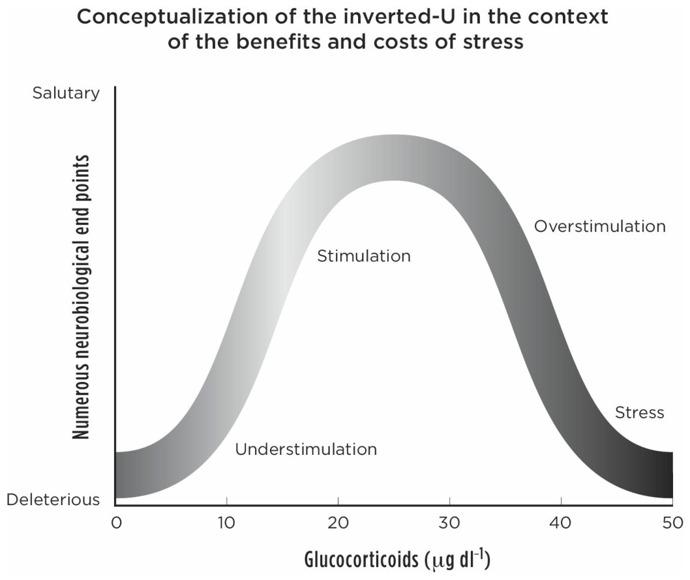

Chương 4 — Nhiều giờ đến nhiều ngày trước đó
Chương Bốn
Vài Giờ Đến Vài Ngày Trước Đó
Giờ đây chúng ta lùi lại bước tiếp theo trong dòng thời gian của mình, xem xét các sự kiện diễn ra từ vài giờ đến vài ngày trước khi một hành vi xảy ra. Để làm điều đó, chúng ta bước vào địa hạt của hormone. Hormone có những tác động gì lên bộ não và các hệ thống giác quan vốn đã chiếm trọn hai chương vừa qua? Hormone ảnh hưởng như thế nào đến những hành vi tốt đẹp nhất và tồi tệ nhất của chúng ta?
Dù chương này xem xét nhiều loại hormone khác nhau, sự chú ý lớn nhất vẫn dành cho một hormone gắn liền không thể tách rời với sự hung hăng, đó là testosterone. Và nói trước kết luận bất ngờ: testosterone ít liên quan đến sự hung hăng hơn nhiều so với người ta thường lầm tưởng. Ở đầu bên kia của phổ, chương này cũng xem xét một hormone được tôn sùng như biểu tượng của sự ấm áp, dễ chịu và tính thân xã hội, đó là oxytocin. Như chúng ta sẽ thấy, nó cũng không hẳn “tuyệt vời ông mặt trời” như người ta vẫn nghĩ.
Những ai chưa quen với hormone và nội tiết học, xin vui lòng xem phần nhập môn ở phụ lục 2.
TIẾNG OAN CỦA TESTOSTERONE
Testosterone được tinh hoàn tiết ra như bước cuối cùng trong trục “vùng dưới đồi/tuyến yên/tinh hoàn”; nó có tác động lên các tế bào khắp cơ thể (tất nhiên bao gồm cả neuron). Và testosterone là nghi phạm quen mặt của tất cả mọi người khi nói đến nguyên nhân nội tiết của sự hung hăng.
Tương Quan và Nhân Quả
Tại sao trong khắp vương quốc động vật, và ở mọi nền văn hóa của con người, con đực/đàn ông lại chiếm phần lớn các hành vi hung hăng và bạo lực? À, thế còn testosterone và một số hormone liên quan (được gọi chung là “androgen”, một thuật ngữ mà trừ khi có ghi chú khác, tôi sẽ dùng một cách đơn giản hóa như đồng nghĩa với “testosterone”) thì sao? Ở hầu hết mọi loài, con đực có lượng testosterone lưu hành nhiều hơn con cái (con cái tiết ra một lượng nhỏ androgen từ tuyến thượng thận). Hơn nữa, sự hung hăng ở con đực phổ biến nhất khi nồng độ testosterone cao nhất (tuổi dậy thì, và trong mùa giao phối ở các loài sinh sản theo mùa).
Do đó, testosterone và sự hung hăng có mối liên hệ với nhau. Hơn nữa, có mật độ thụ thể testosterone đặc biệt cao ở hạch hạnh nhân, ở trạm trung chuyển nơi nó phóng chiếu đến phần còn lại của não (nhân giường của vân tận cùng), và ở các đích đến chính của nó (vùng dưới đồi, chất xám trung tâm của não giữa, và vỏ não trán). Nhưng đây mới chỉ là dữ liệu tương quan. Để chứng minh testosterone gây ra sự hung hăng đòi hỏi một thí nghiệm “loại bỏ” cộng với “bổ sung thay thế”. Loại bỏ—thiến một con đực. Mức độ hung hăng có giảm không? Có (kể cả ở người). Điều này cho thấy thứ gì đó xuất phát từ tinh hoàn gây ra sự hung hăng. Có phải là testosterone không? Bổ sung thay thế—cung cấp testosterone thay thế cho cá thể đã bị thiến đó. Mức độ hung hăng trước khi thiến có quay trở lại không? Có (kể cả ở người).
Vậy là testosterone gây ra sự hung hăng. Đã đến lúc xem kết luận đó sai lầm đến mức nào.
Gợi ý đầu tiên về sự phức tạp xuất hiện sau khi thiến, khi mức độ hung hăng trung bình lao dốc ở mọi loài. Nhưng điều cốt yếu là nó không giảm về 0. À, có thể việc thiến chưa hoàn hảo, bạn đã bỏ sót một ít mô tinh hoàn. Hoặc có thể lượng androgen phụ từ tuyến thượng thận được tiết ra đủ để duy trì sự hung hăng. Nhưng không—ngay cả khi testosterone và các androgen bị loại bỏ hoàn toàn, một phần sự hung hăng vẫn còn. Do đó, một phần sự hung hăng ở con đực độc lập với testosterone.*
Điểm này được làm sáng tỏ qua việc thiến một số tội phạm tình dục, một thủ tục hợp pháp ở vài bang của Mỹ.1 Việc này được thực hiện bằng “thiến hóa học”, tức sử dụng các loại thuốc ức chế sản xuất testosterone hoặc chẹn thụ thể testosterone.* Việc thiến làm giảm ham muốn tình dục ở nhóm nhỏ tội phạm tình dục có những thôi thúc mãnh liệt, ám ảnh và bệnh lý. Nhưng ngoài ra, việc thiến không làm giảm tỷ lệ tái phạm; như một phân tích tổng hợp đã nêu, “những kẻ hiếp dâm thù địch và những kẻ phạm tội tình dục xuất phát từ động cơ quyền lực hoặc giận dữ không đáp ứng với việc điều trị bằng [các thuốc kháng androgen].”
Điều này dẫn đến một điểm vô cùng sâu sắc: một con đực càng có nhiều kinh nghiệm hung hăng trước khi bị thiến, thì sự hung hăng càng tiếp diễn mạnh mẽ sau đó. Nói cách khác, việc nó hung hăng trong tương lai càng ít đòi hỏi testosterone và càng phụ thuộc nhiều hơn vào học tập xã hội.
Chuyển sang vấn đề tiếp theo làm giảm bớt vai trò tối thượng của testosterone: Nồng độ testosterone của từng cá nhân liên quan gì đến sự hung hăng? Nếu một người có nồng độ testosterone cao hơn người khác, hoặc tuần này cao hơn tuần trước, liệu họ có dễ hung hăng hơn không?
Ban đầu câu trả lời dường như là có, khi các nghiên cứu cho thấy mối tương quan giữa sự khác biệt nồng độ testosterone ở từng cá nhân và mức độ hung hăng. Trong một nghiên cứu điển hình, nồng độ testosterone cao hơn được ghi nhận ở những nam tù nhân có tỷ lệ hành vi hung hăng cao hơn. Nhưng bản thân việc hung hăng lại kích thích tiết testosterone; chẳng có gì ngạc nhiên khi những cá nhân hung hăng hơn có nồng độ cao hơn. Những nghiên cứu như vậy không thể tách bạch được đâu là gà và đâu là trứng.
Vì vậy, một câu hỏi hay hơn là liệu sự khác biệt về nồng độ testosterone giữa các cá nhân có dự đoán được ai sẽ hung hăng hay không. Và ở các loài chim, cá, động vật có vú, và đặc biệt là các loài linh trưởng khác, câu trả lời nhìn chung là không. Điều này đã được nghiên cứu rộng rãi ở người, xem xét nhiều thước đo khác nhau về sự hung hăng. Và câu trả lời rất rõ ràng. Trích dẫn nhà nội tiết học người Anh John Archer trong một bài tổng quan mang tính bước ngoặt năm 2006: “Có một mối liên hệ yếu và không nhất quán giữa nồng độ testosterone và sự hung hăng ở người trưởng thành, và . . . việc dùng testosterone cho người tình nguyện thường không làm tăng sự hung hăng của họ.” Bộ não không mấy bận tâm đến những dao động của nồng độ testosterone trong phạm vi bình thường.2 (Mọi thứ sẽ khác khi nồng độ đạt mức “siêu sinh lý”—cao hơn mức cơ thể thường tạo ra. Đây là thế giới của các vận động viên và người tập thể hình lạm dụng steroid đồng hóa giống testosterone liều cao; trong tình huống đó, nguy cơ hung hăng thực sự tăng lên. Có hai yếu tố gây nhiễu: những người chọn dùng các loại thuốc này không phải là ngẫu nhiên, và những người lạm dụng thường vốn đã có khuynh hướng hung hăng; nồng độ androgen siêu sinh lý gây ra lo âu và hoang tưởng, và sự gia tăng hung hăng có thể chỉ là hệ quả thứ phát của điều đó.)3
Như vậy, sự hung hăng thường liên quan đến học tập xã hội nhiều hơn là testosterone, và nồng độ testosterone khác nhau nhìn chung không thể giải thích tại sao một số cá nhân lại hung hăng hơn những người khác. Vậy testosterone thực sự làm gì đối với hành vi?
Những Tác Động Tinh Tế Của Testosterone
Khi nhìn vào những khuôn mặt biểu lộ cảm xúc mạnh mẽ, chúng ta có xu hướng tạo ra các vi biểu cảm bắt chước họ; testosterone làm giảm sự bắt chước đồng cảm như vậy.*4 Hơn nữa, testosterone khiến con người kém nhạy bén hơn trong việc nhận diện cảm xúc qua ánh mắt, và khuôn mặt của người lạ kích hoạt hạch hạnh nhân mạnh hơn so với người quen cũng như bị đánh giá là kém đáng tin cậy hơn.
Testosterone cũng làm tăng sự tự tin và lạc quan, đồng thời làm giảm nỗi sợ hãi và lo âu.5 Điều này giải thích “hiệu ứng kẻ chiến thắng” ở động vật thí nghiệm, nơi việc thắng một cuộc chiến làm tăng sự sẵn sàng tham gia và tỷ lệ thành công của con vật trong một cuộc đụng độ khác. Một phần của sự gia tăng thành công có lẽ phản ánh thực tế rằng chiến thắng kích thích tiết testosterone, làm tăng lượng glucose cung cấp và chuyển hóa ở cơ bắp của con vật, đồng thời khiến pheromone của nó có mùi đáng sợ hơn. Hơn nữa, chiến thắng làm tăng số lượng thụ thể testosterone trong nhân giường của vân tận cùng (trạm trung chuyển mà qua đó hạch hạnh nhân giao tiếp với phần còn lại của não), làm tăng độ nhạy của vùng này với hormone. Thành công trong mọi lĩnh vực từ điền kinh, cờ vua đến thị trường chứng khoán đều thúc đẩy nồng độ testosterone.
Tự tin và lạc quan. Chà, vô số sách self-help thúc giục chúng ta hãy trở nên chính xác như thế. Nhưng testosterone khiến người ta tự tin thái quá và lạc quan thái quá, kéo theo những hệ quả xấu. Trong một nghiên cứu, các cặp đối tượng có thể tham khảo ý kiến nhau trước khi tự đưa ra lựa chọn trong một nhiệm vụ. Testosterone khiến các đối tượng dễ nghĩ rằng ý kiến của mình đúng hơn và phớt lờ góp ý từ bạn đồng hành. Testosterone khiến người ta trở nên kiêu căng, vị kỷ và ái kỷ.6
Testosterone thúc đẩy tính bốc đồng và chấp nhận rủi ro, khiến người ta làm điều dễ dàng hơn ngay cả khi đó là điều ngu ngốc.7 Testosterone làm điều này bằng cách giảm hoạt động ở vỏ não trước trán và sự liên kết chức năng của nó với hạch hạnh nhân, đồng thời tăng cường sự liên kết của hạch hạnh nhân với đồi thị—nguồn của con đường tắt đưa thông tin giác quan vào hạch hạnh nhân. Do đó, các đầu vào tức thời, độ chính xác thấp có ảnh hưởng lớn hơn, còn vỏ não trán kiểu “hãy dừng lại và suy nghĩ kỹ về việc này” thì ít ảnh hưởng hơn.
Trở nên không sợ hãi, tự tin thái quá và lạc quan một cách hoang tưởng chắc chắn mang lại cảm giác dễ chịu. Vì vậy, không có gì ngạc nhiên khi testosterone có thể gây khoái cảm. Chuột cống sẵn sàng làm việc (bằng cách nhấn cần gạt) để được truyền testosterone và thể hiện “sự ưa thích nơi chốn có điều kiện”, quay trở lại một góc ngẫu nhiên trong lồng nơi việc truyền thuốc diễn ra. “Tôi không biết tại sao, nhưng hễ đứng ở đó là tôi thấy sướng.”8,9
Cơ chế sinh học thần kinh bên dưới khớp một cách hoàn hảo. Dopamine cần thiết để quá trình điều kiện hóa ưa thích nơi chốn xảy ra, và testosterone làm tăng hoạt động ở vùng trần bụng, nguồn phát của các đường phóng chiếu dopamine trung não – hệ viền và trung não – vỏ não. Hơn nữa, sự ưa thích nơi chốn có điều kiện được tạo ra khi testosterone được truyền trực tiếp vào nhân nằm, đích phóng chiếu chính của vùng trần bụng. Khi một con chuột thắng một trận đánh, số lượng thụ thể testosterone tăng lên ở vùng trần bụng và nhân nằm, làm tăng độ nhạy cảm đối với các tác động gây cảm giác dễ chịu của hormone này.10
Như vậy testosterone gây ra những tác động tinh tế lên hành vi. Tuy nhiên, điều này chưa nói lên được nhiều vì mọi thứ đều có thể diễn giải theo kiểu nào cũng được. Testosterone làm tăng lo âu—bạn cảm thấy bị đe dọa và trở nên hung hăng phản ứng hơn. Testosterone làm giảm lo âu—bạn cảm thấy kiêu căng và tự tin thái quá, trở nên hung hăng phủ đầu hơn. Testosterone làm tăng sự chấp nhận rủi ro—“Này, đánh cược một phen và xâm lược thôi.” Testosterone làm tăng sự chấp nhận rủi ro—“Này, đánh cược một phen và đề nghị hòa bình thôi.” Testosterone khiến bạn cảm thấy hưng phấn—“Hãy gây thêm một trận chiến nữa đi, vì trận trước diễn ra tuyệt vời quá.” Testosterone khiến bạn cảm thấy hưng phấn—“Tất cả chúng ta hãy nắm tay nhau nào.”
Đây là một khái niệm thống nhất cốt lõi: các tác động của testosterone phụ thuộc cực kỳ lớn vào bối cảnh.
Các Tác Động Có Điều Kiện Của Testosterone
Sự phụ thuộc vào bối cảnh này có nghĩa là thay vì gây ra X, testosterone khuếch đại sức mạnh của một thứ khác để gây ra X.
Một ví dụ kinh điển đến từ một nghiên cứu năm 1977 trên các nhóm khỉ talapoin đực.11 Testosterone được tiêm cho con đực xếp hạng trung bình trong mỗi nhóm (chẳng hạn, hạng 3 trên 5), làm tăng mức độ hung hăng của chúng. Điều này có nghĩa là những anh chàng đang hừng hực steroid này bắt đầu thách thức hạng 1 và hạng 2 trong hệ thống thứ bậc không? Không. Chúng trở thành những kẻ bắt nạt hung hăng đối với hai kẻ tội nghiệp ở hạng 4 và hạng 5. Testosterone không tạo ra các mô thức hung hăng xã hội mới; nó phóng đại những mô thức có sẵn.
Trong các nghiên cứu trên người, testosterone không làm tăng hoạt động nền của hạch hạnh nhân; nó thúc đẩy phản ứng của hạch hạnh nhân và phản ứng nhịp tim đối với các khuôn mặt giận dữ (nhưng không phải với khuôn mặt vui vẻ hay trung tính). Tương tự, testosterone không khiến các đối tượng trở nên ích kỷ và thiếu hợp tác hơn trong một trò chơi kinh tế; nó khiến họ trừng phạt nặng tay hơn khi bị khiêu khích bởi sự đối xử tệ bạc, làm tăng “sự hung hăng phản ứng mang tính trả đũa.”12
Sự phụ thuộc vào bối cảnh cũng xảy ra ở cấp độ sinh học thần kinh, ở chỗ hormone này rút ngắn giai đoạn trơ của các neuron trong hạch hạnh nhân và các đích đến của hạch hạnh nhân ở vùng dưới đồi.13 Hãy nhớ lại rằng giai đoạn trơ xuất hiện ở neuron sau các điện thế hoạt động. Đây là lúc điện thế nghỉ của neuron bị siêu phân cực (tức là mang điện tích âm hơn bình thường), làm neuron kém kích thích hơn, tạo ra một khoảng lặng sau điện thế hoạt động. Do đó, giai đoạn trơ ngắn hơn đồng nghĩa với tần suất điện thế hoạt động cao hơn. Vậy có phải testosterone đang trực tiếp tạo ra các điện thế hoạt động ở những neuron này không? Không. Nó khiến chúng phát xung với tốc độ nhanh hơn nếu chúng đang bị kích thích bởi một thứ khác. Tương tự, testosterone làm tăng phản ứng của hạch hạnh nhân với khuôn mặt giận dữ, nhưng không phải với các loại khuôn mặt khác. Như vậy, nếu hạch hạnh nhân vốn đã đang phản ứng với một lĩnh vực nào đó của học tập xã hội, testosterone sẽ vặn to âm lượng lên.
Một Tổng Hợp Chìa Khóa: Giả Thuyết Thách Thức
Do đó, các tác động của testosterone mang tính có điều kiện và khuếch đại, làm trầm trọng thêm những khuynh hướng hung hăng có sẵn thay vì tạo ra sự hung hăng từ hư không. Bức tranh này đã truyền cảm hứng cho “giả thuyết thách thức” (challenge hypothesis), một khái niệm hóa thống nhất tuyệt vời về các tác động của testosterone.14 Được đề xuất vào năm 1990 bởi nhà nội tiết học hành vi xuất sắc John Wingfield thuộc Đại học California tại Davis và các đồng nghiệp, ý tưởng này cho rằng nồng độ testosterone tăng cao chỉ làm tăng sự hung hăng vào thời điểm có thách thức. Và mọi chuyện vận hành chính xác như vậy.
Điều này giải thích tại sao nồng độ testosterone nền lại ít liên quan đến sự hung hăng sau đó, và tại sao sự gia tăng testosterone do dậy thì, kích thích tình dục, hay bắt đầu mùa giao phối cũng không làm tăng sự hung hăng.15
Nhưng mọi thứ sẽ khác trong các tình huống thách thức.16 Ở nhiều loài linh trưởng, nồng độ testosterone tăng lên khi một hệ thống thứ bậc thống trị mới hình thành hoặc trải qua sự tái tổ chức. Testosterone tăng ở người trong cả thi đấu thể thao cá nhân lẫn đồng đội, bao gồm bóng rổ, đấu vật, quần vợt, bóng bầu dục và judo; thường có một sự gia tăng trước sự kiện để đón đầu và một sự gia tăng lớn hơn sau đó, đặc biệt là ở những người chiến thắng.* Đáng chú ý, việc xem đội bóng yêu thích của bạn chiến thắng cũng làm tăng nồng độ testosterone, cho thấy sự gia tăng này ít liên quan đến hoạt động cơ bắp mà liên quan nhiều hơn đến tâm lý thống trị, sự đồng nhất hóa và lòng tự trọng.
Quan trọng nhất, sự gia tăng testosterone sau một thách thức khiến sự hung hăng dễ xảy ra hơn.17 Hãy nghĩ về điều này. Nồng độ testosterone tăng lên, đi đến não. Nếu điều này xảy ra vì ai đó đang thách thức bạn, bạn hướng về phía sự hung hăng. Nếu một sự gia tăng y hệt xảy ra vì ngày đang dài ra và mùa giao phối sắp đến, bạn quyết định bay hàng nghìn dặm đến bãi sinh sản của mình. Và nếu điều tương tự xảy ra vì tuổi dậy thì, bạn trở nên ngớ ngẩn và cười khúc khích quanh cô bạn chơi kèn clarinet trong ban nhạc. Sự phụ thuộc vào bối cảnh thật đáng kinh ngạc.*18
Giả thuyết thách thức có phần thứ hai. Khi testosterone tăng lên sau một thách thức, nó không thúc đẩy sự hung hăng. Thay vào đó, nó thúc đẩy bất kỳ hành vi nào cần thiết để duy trì địa vị. Điều này làm thay đổi mọi thứ một cách sâu sắc.
À, có lẽ không hẳn, vì việc duy trì địa vị đối với, chẳng hạn, các loài linh trưởng đực chủ yếu bao gồm sự hung hăng hoặc đe dọa hung hăng—từ việc cào xé đối thủ đến cái nhìn chằm chằm kiểu “Mày không biết mình đang đụng vào ai đâu”.19
Và bây giờ là một nghiên cứu quan trọng đến sửng sốt. Điều gì xảy ra nếu việc bảo vệ địa vị đòi hỏi bạn phải tỏ ra tử tế? Điều này đã được khám phá trong một nghiên cứu của Christoph Eisenegger và Ernst Fehr thuộc Đại học Zurich.20
Người tham gia chơi Trò chơi Tối hậu thư (đã giới thiệu ở chương 2), trong đó bạn quyết định cách chia tiền giữa mình và một người chơi khác. Người kia có thể chấp nhận phần chia hoặc từ chối, trong trường hợp đó cả hai đều không nhận được gì. Nghiên cứu trước đó đã chỉ ra rằng khi đề nghị của ai đó bị từ chối, họ cảm thấy bị xúc phạm, bị hạ thấp, đặc biệt nếu tin tức đó lan sang các vòng sau với những người chơi khác. Nói cách khác, trong kịch bản này địa vị và danh tiếng dựa vào việc công bằng.
Và chuyện gì xảy ra khi các đối tượng được dùng testosterone trước đó? Mọi người đưa ra những đề nghị hào phóng hơn. Hormone này khiến bạn làm gì phụ thuộc vào việc điều gì được coi là oai phong. Điều này đòi hỏi một hệ thống dây thần kinh nội tiết tinh vi nhạy cảm với học tập xã hội. Bạn khó có thể đòi hỏi một phát hiện nào đi ngược lại tai tiếng của testosterone hơn thế.
Nghiên cứu còn chứa một phát hiện phụ cực kỳ sắc sảo giúp tách bạch thêm giữa huyền thoại và thực tế về testosterone. Như thường lệ, các đối tượng nhận được testosterone hoặc nước muối sinh lý mà không biết mình nhận loại nào. Những đối tượng tin rằng mình đã nhận testosterone (bất kể thực tế họ có nhận hay không) đã đưa ra những đề nghị ít hào phóng hơn. Nói cách khác, testosterone không nhất thiết khiến bạn hành xử tệ hại, nhưng việc tin rằng nó làm vậy và tin rằng mình đang ngập trong thứ chất đó lại khiến bạn hành xử tệ hại.
Các nghiên cứu bổ sung cho thấy testosterone thúc đẩy tính thân xã hội trong bối cảnh phù hợp. Trong một nghiên cứu, trong hoàn cảnh mà lòng tự hào của một người gắn liền với sự trung thực, testosterone làm giảm tình trạng gian lận của nam giới trong một trò chơi. Trong một nghiên cứu khác, các đối tượng quyết định xem họ sẽ giữ lại bao nhiêu trong một khoản tiền và sẽ đóng góp công khai bao nhiêu vào quỹ chung cho tất cả người chơi; testosterone khiến hầu hết đối tượng trở nên thân xã hội hơn.21
Điều này có nghĩa là gì? Testosterone khiến chúng ta sẵn sàng làm những gì cần thiết để đạt được và duy trì địa vị. Và điểm mấu chốt nằm ở cụm từ *những gì cần thiết*. Nếu thiết kế hoàn cảnh xã hội đúng cách, việc tăng nồng độ testosterone trong một thách thức sẽ khiến con người thi đua nhau điên cuồng để thực hiện nhiều hành động tử tế ngẫu nhiên nhất. Trong thế giới đầy rẫy bạo lực nam giới của chúng ta, vấn đề không phải là testosterone có thể làm tăng mức độ hung hăng. Vấn đề nằm ở tần suất chúng ta tưởng thưởng cho sự hung hăng.
OXYTOCIN VÀ VASOPRESSIN: GIẤC MƠ TIẾP THỊ
Nếu luận điểm của phần trước là testosterone đã phải chịu tiếng oan, thì luận điểm của phần này là oxytocin (và người anh em họ gần vasopressin) đang ung dung tận hưởng một “nhiệm kỳ tổng thống miễn nhiễm bê bối”. Theo truyền thuyết, oxytocin khiến các sinh vật bớt hung hăng hơn, hòa hợp xã hội hơn, tin tưởng và đồng cảm hơn. Những cá thể được điều trị bằng oxytocin trở thành bạn đời chung thủy hơn và cha mẹ chu đáo hơn. Nó khiến chuột thí nghiệm trở nên hào phóng hơn và biết lắng nghe hơn, khiến ruồi giấm cất tiếng hát ngọt ngào như Joan Baez. Dĩ nhiên, mọi thứ phức tạp hơn thế, và oxytocin có một mặt tối đầy thông tin.
Những Điều Cơ Bản
Oxytocin và vasopressin là hai hormone tương đồng về mặt hóa học; trình tự DNA cấu tạo nên gene của chúng giống nhau, và hai gene này nằm sát nhau trên cùng một nhiễm sắc thể. Có một gene tổ tiên duy nhất mà vài trăm triệu năm trước đã vô tình bị “nhân đôi” trong bộ gene, rồi trình tự DNA ở hai bản sao của gene đó trôi dạt độc lập, tiến hóa thành hai gene có quan hệ họ hàng gần (hãy đón xem thêm ở chương 8). Sự nhân đôi gene này xảy ra khi động vật có vú đang xuất hiện; các động vật có xương sống khác chỉ có phiên bản tổ tiên, gọi là vasotocin, có cấu trúc nằm giữa hai hormone tách biệt của động vật có vú.
Đối với các nhà sinh học thần kinh thế kỷ hai mươi, oxytocin và vasopressin khá nhàm chán. Chúng được tạo ra trong các neuron vùng dưới đồi gửi sợi trục đến thùy sau tuyến yên. Ở đó chúng được giải phóng vào tuần hoàn máu, qua đó đạt được tư cách hormone, và chẳng còn liên quan gì đến não nữa. Oxytocin kích thích co bóp tử cung khi chuyển dạ và tiết sữa sau đó. Vasopressin (còn gọi là “hormone chống bài niệu”) điều hòa sự giữ nước ở thận. Và phản ánh cấu trúc tương đồng của chúng, mỗi chất cũng có tác dụng nhẹ giống chất kia. Hết chuyện.
Các Nhà Sinh Học Thần Kinh Bắt Đầu Chú Ý
Mọi thứ trở nên thú vị với phát hiện rằng những neuron vùng dưới đồi sản xuất oxytocin và vasopressin đó cũng gửi các đường phóng chiếu đi khắp não, bao gồm vùng trần bụng và nhân nằm liên quan đến dopamine, hồi hải mã, hạch hạnh nhân và vỏ não trán—tất cả đều là những vùng có lượng thụ thể dồi dào cho các hormone này. Hơn nữa, oxytocin và vasopressin hóa ra còn được tổng hợp và tiết ra ở những nơi khác trong não. Hai hormone ngoại biên cổ điển, nhàm chán này lại ảnh hưởng đến chức năng não và hành vi. Chúng bắt đầu được gọi là “neuropeptide”—những chất truyền tin hoạt động thần kinh có cấu trúc peptide—một cách nói hoa mỹ để chỉ rằng chúng là những protein nhỏ (và để tránh phải viết “oxytocin và vasopressin” lặp đi lặp lại không hồi kết, tôi sẽ gọi chúng là các neuropeptide; tuy nhiên lưu ý rằng còn có các neuropeptide khác nữa).
Những phát hiện ban đầu về tác động hành vi của chúng rất hợp lý.22 Oxytocin chuẩn bị cơ thể động vật có vú cái cho việc sinh nở và tiết sữa; theo logic đó, oxytocin cũng thúc đẩy hành vi làm mẹ. Bộ não tăng cường sản xuất oxytocin khi một con chuột cái sinh con, nhờ vào một mạch vùng dưới đồi có chức năng khác biệt rõ rệt giữa con cái và con đực. Hơn nữa, vùng trần bụng tăng độ nhạy với neuropeptide này bằng cách tăng số lượng thụ thể oxytocin. Truyền oxytocin vào não một con chuột cái tơ, và nó sẽ hành xử như một người mẹ—tha con về ổ, chải chuốt và liếm láp chuột con. Chặn tác động của oxytocin ở một chuột mẹ đang nuôi con,*23 và nó sẽ ngừng các hành vi làm mẹ, bao gồm cả việc cho bú. Oxytocin hoạt động trong hệ khứu giác, giúp bà mẹ mới sinh học được mùi của con mình. Trong khi đó, vasopressin có tác dụng tương tự nhưng nhẹ hơn.
Chẳng mấy chốc các loài khác cũng lên tiếng. Oxytocin giúp cừu học được mùi con của mình và thúc đẩy khỉ cái chải chuốt cho con. Xịt oxytocin vào mũi một phụ nữ (một cách để đưa neuropeptide vượt qua hàng rào máu – não vào trong não), và cô ấy sẽ thấy các em bé trông đáng yêu hơn. Hơn nữa, những phụ nữ mang biến thể gene sản xuất nhiều oxytocin hoặc thụ thể oxytocin hơn có mức độ chạm vào con sơ sinh trung bình cao hơn và nhìn đồng bộ với con nhiều hơn.
Như vậy oxytocin đóng vai trò trung tâm trong việc động vật có vú cái cho con bú, muốn cho con bú, và nhớ đứa nào là con mình. Con đực sau đó cũng nhập cuộc, vì vasopressin đóng vai trò trong hành vi làm cha. Việc một con gặm nhấm cái sinh con làm tăng nồng độ vasopressin và thụ thể vasopressin khắp cơ thể, bao gồm cả trong não, của con đực ở gần đó. Ở khỉ, những ông bố giàu kinh nghiệm có nhiều tua nhánh hơn ở các neuron vỏ não trán chứa thụ thể vasopressin. Hơn nữa, việc cung cấp vasopressin làm tăng cường các hành vi làm cha. Tuy nhiên, có một lưu ý về tập tính học: điều này chỉ xảy ra ở những loài mà con đực có tính làm cha (ví dụ, chuột đồng thảo nguyên và khỉ đuôi sóc marmoset).24*
Rồi hàng chục triệu năm trước, một số loài gặm nhấm và linh trưởng đã tiến hóa độc lập hình thức gắn kết cặp đôi một vợ một chồng, cùng với các neuropeptide giữ vai trò trung tâm trong quá trình này.25 Ở khỉ marmoset và khỉ titi, vốn đều gắn kết cặp đôi, oxytocin củng cố mối liên kết đó, làm tăng sở thích của một con khỉ muốn rúc vào bạn đời của mình hơn là rúc vào một kẻ lạ. Sau đó có một nghiên cứu giống đến mức đáng xấu hổ với khuôn mẫu các cặp đôi ở người. Ở khỉ tamarin gắn kết cặp đôi, việc chải chuốt và tiếp xúc cơ thể nhiều dự đoán nồng độ oxytocin cao ở thành viên cái trong cặp. Điều gì dự đoán nồng độ oxytocin cao ở con đực? Quan hệ tình dục nhiều.
Công trình tiên phong tuyệt đẹp của Thomas Insel thuộc Viện Sức khỏe Tâm thần Quốc gia Mỹ, Larry Young thuộc Đại học Emory, và Sue Carter thuộc Đại học Illinois đã biến một loài chuột đồng trở thành loài gặm nhấm lừng danh nhất hành tinh.26 Hầu hết các loài chuột đồng (ví dụ, chuột đồng núi) đều đa thê. Ngược lại, chuột đồng thảo nguyên, như một lời tri ân tới Garrison Keillor, kết thành các cặp giao phối một vợ một chồng suốt đời. Dĩ nhiên, thực tế không hẳn hoàn toàn như vậy—dù chúng là những “kẻ gắn kết cặp đôi xã hội” với mối quan hệ lâu dài, chúng không hoàn toàn là “kẻ gắn kết cặp đôi tình dục” hoàn hảo, vì con đực vẫn có thể tòm tem bên ngoài. Dẫu vậy, chuột đồng thảo nguyên gắn kết cặp đôi mạnh hơn các loài chuột đồng khác, thôi thúc Insel, Young và Carter đi tìm lý do tại sao.
Phát hiện đầu tiên: quan hệ tình dục giải phóng oxytocin và vasopressin vào nhân nằm của chuột đồng cái và chuột đồng đực tương ứng. Lý thuyết hiển nhiên: chuột đồng thảo nguyên giải phóng nhiều chất này hơn trong lúc giao phối so với chuột đồng đa thê, gây ra cảm giác phê sướng tưởng thưởng mạnh hơn, khuyến khích các cá thể gắn bó với bạn đời. Nhưng chuột đồng thảo nguyên không giải phóng nhiều neuropeptide hơn chuột đồng núi. Thay vào đó, chuột đồng thảo nguyên có nhiều thụ thể tương ứng ở nhân nằm hơn so với chuột đồng đa thê.* Hơn nữa, chuột đồng thảo nguyên đực mang biến thể gene thụ thể vasopressin tạo ra nhiều thụ thể hơn ở nhân nằm là những kẻ gắn kết cặp đôi bền chặt hơn. Sau đó các nhà khoa học đã thực hiện hai nghiên cứu kiệt tác. Đầu tiên, họ biến đổi gene não của chuột nhắt đực để biểu hiện phiên bản thụ thể vasopressin của chuột đồng thảo nguyên, và chúng chải chuốt và rúc vào những con cái quen thuộc nhiều hơn (nhưng không làm vậy với con cái lạ). Sau đó, các nhà khoa học biến đổi não của chuột đồng núi đực để có nhiều thụ thể vasopressin hơn ở nhân nằm; những con đực này trở nên gắn bó xã hội hơn với từng con cái cụ thể.*
Còn các phiên bản gene thụ thể vasopressin ở các loài khác thì sao? Khi so sánh với tinh tinh thông thường, tinh tinh lùn bonobo có một biến thể liên quan đến sự biểu hiện thụ thể nhiều hơn và sự gắn kết xã hội giữa con cái và con đực cao hơn hẳn (mặc dù, trái ngược với chuột đồng thảo nguyên, bonobo chẳng hề một vợ một chồng chút nào).27
Còn con người thì sao? Việc này rất khó nghiên cứu, vì bạn không thể đo các neuropeptide này trong những vùng não tí hon ở người mà thay vào đó phải kiểm tra nồng độ trong tuần hoàn máu, một thước đo khá gián tiếp.
Tuy nhiên, các neuropeptide này dường như có đóng vai trò trong sự gắn kết cặp đôi ở người.28 Trước hết, nồng độ oxytocin lưu hành tăng cao ở các cặp đôi khi họ mới bắt đầu hẹn hò. Hơn nữa, nồng độ càng cao thì càng có nhiều cử chỉ âu yếm thể xác, hành vi càng đồng bộ, mối quan hệ càng bền lâu, và người phỏng vấn đánh giá cặp đôi càng hạnh phúc.
Thú vị hơn nữa là những nghiên cứu trong đó oxytocin (hoặc thuốc xịt đối chứng) được xịt qua đường mũi. Trong một nghiên cứu vui nhộn, các cặp đôi phải thảo luận về một trong những xung đột của họ; xịt oxytocin vào mũi, và họ được đánh giá là giao tiếp tích cực hơn cũng như tiết ra ít hormone căng thẳng hơn. Một nghiên cứu khác gợi ý rằng oxytocin củng cố sự gắn kết cặp đôi một cách vô thức. Các tình nguyện viên nam dị tính, có hoặc không có một nhát xịt oxytocin, tương tác với một nữ nghiên cứu viên hấp dẫn, cùng làm một nhiệm vụ vớ vẩn nào đó. Ở những người đàn ông đang trong mối quan hệ ổn định, oxytocin làm tăng khoảng cách đứng của họ với người phụ nữ đó trung bình từ bốn đến sáu inch. Với những anh chàng độc thân, không có tác dụng. (Tại sao oxytocin không khiến họ đứng gần hơn? Các nhà nghiên cứu chỉ ra rằng họ vốn đã đứng gần hết mức có thể chấp nhận được rồi.) Nếu người làm thí nghiệm là nam, không có tác dụng. Hơn nữa, oxytocin khiến nam giới đang có đôi dành ít thời gian hơn để nhìn ảnh những phụ nữ hấp dẫn. Điều quan trọng là oxytocin không khiến đàn ông đánh giá những phụ nữ này kém hấp dẫn hơn; họ chỉ đơn giản là ít hứng thú hơn mà thôi.29
Như vậy, oxytocin và vasopressin thúc đẩy sự gắn kết giữa cha mẹ và con cái cũng như giữa các cặp đôi.* Giờ hãy đến với một điều thực sự đáng yêu mà tiến hóa đã nhào nặn gần đây. Vào một thời điểm nào đó trong vòng năm mươi nghìn năm qua (tức là chưa đến 0,1 phần trăm khoảng thời gian oxytocin tồn tại), bộ não của con người và loài sói được thuần hóa đã tiến hóa một phản ứng mới đối với oxytocin: khi một con chó và chủ của nó (nhưng không phải người lạ) tương tác với nhau, cả hai đều tiết ra oxytocin.30 Càng dành nhiều thời gian nhìn vào mắt nhau, mức tăng càng lớn. Cho chó dùng oxytocin, và chúng sẽ nhìn chủ lâu hơn . . . điều này lại làm tăng nồng độ oxytocin của người chủ. Vậy là một hormone vốn tiến hóa cho sự gắn kết mẹ – con lại đóng vai trò trong hình thức gắn kết kỳ lạ, chưa từng có tiền lệ này giữa hai loài khác nhau.
Phù hợp với tác động lên sự gắn kết, oxytocin ức chế hạch hạnh nhân trung tâm, kìm hãm nỗi sợ hãi và lo âu, đồng thời kích hoạt hệ thần kinh phó giao cảm “bình tĩnh, thực vật”. Hơn nữa, những người mang biến thể gene thụ thể oxytocin gắn liền với cách làm cha mẹ nhạy cảm hơn cũng có phản ứng giật mình tim mạch thấp hơn. Theo lời của Sue Carter, việc tiếp xúc với oxytocin là “một ẩn dụ sinh lý cho sự an toàn”. Hơn nữa, oxytocin làm giảm sự hung hăng ở loài gặm nhấm, và những con chuột nhắt bị bất hoạt hệ thống oxytocin (bằng cách xóa gene tạo oxytocin hoặc thụ thể của nó) trở nên hung hăng một cách bất thường.31
Các nghiên cứu khác cho thấy mọi người đánh giá khuôn mặt đáng tin cậy hơn, và tin tưởng hơn trong các trò chơi kinh tế, khi được dùng oxytocin (oxytocin không có tác dụng khi ai đó nghĩ rằng họ đang chơi với máy tính, chứng tỏ đây là vấn đề về hành vi xã hội).32 Sự gia tăng lòng tin này rất thú vị. Thông thường, nếu người chơi kia làm điều gì đó lật lọng trong trò chơi, các đối tượng sẽ ít tin tưởng hơn ở các vòng sau; ngược lại, những nhà đầu tư được dùng oxytocin không điều chỉnh hành vi theo cách này. Nói một cách khoa học, “oxytocin đã tiêm phòng chứng né tránh bị phản bội ở các nhà đầu tư”; nói một cách cay nghiệt, oxytocin biến con người thành những kẻ ngây thơ phi lý; nói một cách thiên thần hơn, oxytocin khiến con người biết đưa má kia ra cho người ta tát.
Nhiều tác động thân xã hội hơn của oxytocin đã lộ diện. Nó giúp mọi người nhận diện tốt hơn những khuôn mặt vui vẻ (so với giận dữ, sợ hãi hoặc trung tính) hoặc những từ ngữ có sắc thái xã hội tích cực (so với tiêu cực), khi chúng được hiển thị thoáng qua. Hơn nữa, oxytocin khiến mọi người hào phóng từ thiện hơn. Những người mang phiên bản gene thụ thể oxytocin gắn với cách làm cha mẹ nhạy cảm hơn được người quan sát đánh giá là thân xã hội hơn (khi thảo luận về một khoảng thời gian đau khổ cá nhân), cũng như nhạy cảm hơn với sự tán thành của xã hội. Và neuropeptide này khiến con người phản ứng mạnh hơn với sự củng cố xã hội, nâng cao thành tích trong một nhiệm vụ mà câu trả lời đúng hay sai sẽ nhận được nụ cười hoặc cái cau mày tương ứng (trong khi không có tác dụng khi câu trả lời đúng và sai kích hoạt các ánh đèn màu khác nhau).33
Vậy là oxytocin khơi gợi hành vi thân xã hội, và oxytocin được giải phóng khi chúng ta trải nghiệm hành vi thân xã hội (được tin tưởng trong một trò chơi, nhận được một cái chạm ấm áp, v.v.). Nói cách khác, đó là một vòng phản hồi dương ấm áp và dễ chịu.34
Rõ ràng, oxytocin và vasopressin là những hormone tuyệt vời nhất vũ trụ.* Đổ chúng vào nguồn nước sinh hoạt đi, và mọi người sẽ từ thiện hơn, tin tưởng hơn và đồng cảm hơn. Chúng ta sẽ làm cha mẹ tốt hơn và sẽ làm tình chứ không làm chiến tranh (dù chủ yếu là tình yêu thuần khiết thôi, vì những người đang có đôi sẽ giữ khoảng cách rộng rãi với tất cả những người khác). Tuyệt nhất là chúng ta sẽ mua đủ thứ đồ vô bổ, tin sái cổ vào các băng rôn quảng cáo trong cửa hàng một khi oxytocin bắt đầu được phun ra từ hệ thống thông gió.
Được rồi, đến lúc bình tĩnh lại một chút.
Tính Thân Xã Hội So Với Năng Lực Xã Hội
Oxytocin và vasopressin là về tính thân xã hội hay năng lực xã hội? Những hormone này khiến chúng ta nhìn thấy những khuôn mặt vui vẻ ở khắp mọi nơi hay trở nên hứng thú hơn với việc thu thập thông tin xã hội chính xác về các khuôn mặt? Vế sau không nhất thiết là thân xã hội; suy cho cùng, thông tin chính xác về cảm xúc của ai đó giúp ta dễ thao túng họ hơn.
Trường phái Neuropeptide Tuyệt Vời ủng hộ ý tưởng về tính thân xã hội phổ quát.35 Nhưng các neuropeptide này cũng thúc đẩy sự quan tâm và năng lực xã hội. Chúng khiến mọi người nhìn vào mắt người khác lâu hơn, làm tăng độ chính xác khi đọc cảm xúc. Hơn nữa, oxytocin tăng cường hoạt động ở giao điểm thái dương – đỉnh (vùng liên quan đến Lý thuyết Tâm trí) khi mọi người thực hiện nhiệm vụ nhận diện xã hội. Hormone này làm tăng độ chính xác trong việc đánh giá suy nghĩ của người khác, với một điểm xoắn theo giới tính—phụ nữ cải thiện khả năng phát hiện các mối quan hệ họ hàng, trong khi nam giới cải thiện khả năng phát hiện các mối quan hệ thống trị. Ngoài ra, oxytocin làm tăng độ chính xác khi ghi nhớ khuôn mặt và biểu cảm cảm xúc của chúng, và những người mang biến thể gene thụ thể oxytocin “làm cha mẹ nhạy cảm” đặc biệt giỏi trong việc đánh giá cảm xúc. Tương tự, các hormone này giúp loài gặm nhấm học mùi của từng cá thể, nhưng không giúp học các mùi phi xã hội.
Nghiên cứu hình ảnh thần kinh cho thấy các neuropeptide này liên quan đến năng lực xã hội, bên cạnh tính thân xã hội.36 Ví dụ, các biến thể của một gene liên quan đến tín hiệu oxytocin* gắn liền với mức độ kích hoạt khác nhau của vùng nhận diện khuôn mặt hình thoi (fusiform face area) khi nhìn vào khuôn mặt.
Những phát hiện như thế gợi ý rằng sự bất thường ở các neuropeptide này làm tăng nguy cơ mắc các rối loạn suy giảm tương tác xã hội, cụ thể là rối loạn phổ tự kỷ (ASD) (đáng chú ý là người mắc ASD cho thấy phản ứng bị làm cùn ở vùng hình thoi đối với khuôn mặt).37 Đáng kinh ngạc là ASD có liên hệ với các biến thể gene liên quan đến oxytocin và vasopressin, với các cơ chế phi di truyền làm bất hoạt gene thụ thể oxytocin, và với nồng độ thụ thể thấp hơn. Hơn nữa, các neuropeptide giúp cải thiện kỹ năng xã hội ở một số cá nhân mắc ASD—ví dụ, tăng cường giao tiếp bằng mắt.
Do đó, đôi khi oxytocin và vasopressin khiến chúng ta thân xã hội hơn, nhưng đôi khi chúng lại khiến chúng ta trở thành những người thu thập thông tin xã hội hăng hái và chính xác hơn. Tuy nhiên, vẫn có một thiên kiến hướng về khuôn mặt vui vẻ, vì độ chính xác được nâng cao nhất đối với các cảm xúc tích cực.38
Đã đến lúc cho thêm những sự phức tạp.
Các Tác Động Có Điều Kiện Của Oxytocin Và Vasopressin
Hãy nhớ lại các tác động có điều kiện của testosterone (ví dụ, khiến một con khỉ hung hăng hơn, nhưng chỉ đối với những cá thể mà nó vốn đã thống trị). Tự nhiên là tác động của các neuropeptide này cũng mang tính có điều kiện.39
Một yếu tố đã được đề cập là giới tính: oxytocin tăng cường những khía cạnh khác nhau của năng lực xã hội ở phụ nữ và nam giới. Hơn nữa, tác dụng làm dịu của oxytocin lên hạch hạnh nhân nhất quán ở nam giới hơn ở phụ nữ. Đúng như dự đoán, các neuron tạo ra những neuropeptide này được điều hòa bởi cả estrogen và testosterone.40
Là một tác động có điều kiện thực sự thú vị, oxytocin làm tăng lòng hào phóng từ thiện—nhưng chỉ ở những người vốn đã hào phóng. Điều này phản chiếu việc testosterone chỉ làm tăng sự hung hăng ở những người vốn có khuynh hướng hung hăng. Hormone hiếm khi hành động bên ngoài bối cảnh của cá nhân và môi trường của người đó.41
Cuối cùng, một nghiên cứu hấp dẫn cho thấy sự phụ thuộc vào bối cảnh văn hóa trong các tác động của oxytocin.42 Khi căng thẳng, người Mỹ tìm kiếm sự hỗ trợ cảm xúc (ví dụ, kể cho bạn bè nghe về vấn đề của mình) sẵn sàng hơn so với người Đông Á. Trong một nghiên cứu, các biến thể gene thụ thể oxytocin đã được xác định ở các đối tượng người Mỹ và người Hàn Quốc. Trong hoàn cảnh không căng thẳng, cả nền tảng văn hóa lẫn biến thể thụ thể đều không ảnh hưởng đến hành vi tìm kiếm sự hỗ trợ. Trong những giai đoạn căng thẳng, việc tìm kiếm sự hỗ trợ tăng lên ở những đối tượng mang biến thể thụ thể gắn liền với độ nhạy cao hơn đối với phản hồi và sự tán thành xã hội—nhưng chỉ ở người Mỹ (bao gồm cả người Mỹ gốc Hàn). Oxytocin tác động thế nào đến hành vi tìm kiếm sự hỗ trợ? Điều đó phụ thuộc vào việc bạn có đang căng thẳng hay không. Và vào biến thể di truyền của thụ thể oxytocin của bạn. Và vào văn hóa của bạn. Sẽ nói thêm ở chương 8 và chương 9.
Và Mặt Tối Của Những Neuropeptide Này
Như chúng ta đã thấy, oxytocin (và vasopressin) làm giảm sự hung hăng ở chuột cái. Ngoại trừ sự hung hăng để bảo vệ đàn con, thứ mà neuropeptide này làm tăng lên thông qua tác động ở hạch hạnh nhân trung tâm (với vai trò của nó trong nỗi sợ hãi bản năng).43
Điều này hoàn toàn khớp với việc các neuropeptide này tăng cường bản năng làm mẹ, bao gồm cả thứ bản năng làm mẹ nhe nanh gầm gừ kiểu đừng-bước-lại-gần-thêm-một-bước-nào-nữa. Tương tự, vasopressin làm tăng sự hung hăng ở chuột đồng thảo nguyên đực làm cha. Phát hiện này đi kèm một điều kiện quen thuộc bổ sung. Chuột đồng thảo nguyên đực càng hung hăng thì sự hung hăng càng ít giảm đi sau khi hệ thống vasopressin của nó bị chẹn—giống hệt trường hợp của testosterone, với kinh nghiệm gia tăng, sự hung hăng được duy trì bởi học tập xã hội thay vì bởi một hormone/neuropeptide. Hơn nữa, vasopressin làm tăng sự hung hăng nhiều nhất ở những con gặm nhấm đực vốn đã hung hăng—lại thêm một tác động sinh học phụ thuộc vào bối cảnh cá nhân và xã hội.44
Và giờ là lúc thực sự đảo lộn góc nhìn của chúng ta về những neuropeptide tạo cảm giác dễ chịu này. Trước hết, quay lại chuyện oxytocin làm tăng lòng tin và sự hợp tác trong một trò chơi kinh tế—nhưng không phải nếu người chơi kia ẩn danh và ở trong một căn phòng khác.
Khi chơi với người lạ, oxytocin làm giảm sự hợp tác, làm tăng sự đố kỵ khi vận may kém, và làm tăng sự hả hê khi vận may tốt.45
Cuối cùng, những nghiên cứu tuyệt đẹp của Carsten de Dreu thuộc Đại học Amsterdam đã cho thấy oxytocin có thể kém ấm áp và kém dễ chịu đến mức nào.46 Trong nghiên cứu đầu tiên, các đối tượng nam chia thành hai đội; mỗi đối tượng chọn đóng góp bao nhiêu tiền của mình vào quỹ chung chia sẻ với các đồng đội. Như thường lệ, oxytocin làm tăng sự hào phóng như vậy. Sau đó, người tham gia chơi Trò chơi Song đề Tù nhân (Prisoner’s Dilemma) với một người từ đội kia.* Khi mức cược tài chính cao, khiến các đối tượng có động lực hơn, oxytocin khiến họ dễ đâm sau lưng đối thủ phủ đầu hơn. Như vậy, oxytocin khiến bạn thân xã hội hơn với những người giống bạn (tức đồng đội của bạn) nhưng lại tự phát trở nên tệ bạc với Những Kẻ Khác vốn là mối đe dọa. Như De Dreu nhấn mạnh, có lẽ oxytocin tiến hóa để nâng cao năng lực xã hội nhằm giúp chúng ta nhận diện tốt hơn ai là Phe Ta.
Trong nghiên cứu thứ hai của De Dreu, các sinh viên Hà Lan thực hiện Bài kiểm tra Liên tưởng Ngầm (Implicit Association Test) về thiên kiến vô thức.* Và oxytocin đã phóng đại các thiên kiến chống lại hai nhóm ngoại lai, cụ thể là người Trung Đông và người Đức.47
Sau đó là phần thứ hai thực sự hé lộ bản chất của nghiên cứu. Các đối tượng phải quyết định xem có chấp nhận được việc giết một người để cứu năm người hay không. Trong kịch bản đó, tên của “con cừu tế thần” tiềm năng mang âm hưởng điển hình của người Hà Lan (Dirk hoặc Peter), người Đức (Markus hoặc Helmut), hoặc người Trung Đông (Ahmed hoặc Youssef); năm người gặp nguy hiểm thì không có tên. Đáng kinh ngạc là oxytocin khiến các đối tượng ít có khả năng hy sinh anh chàng Dirk hay Peter thân quen hơn so với Helmut hay Ahmed.
Oxytocin, “hormone tình yêu”, khiến chúng ta thân xã hội hơn với Phe Ta và tệ hơn với tất cả những người còn lại. Đó không phải là tính thân xã hội phổ quát. Đó là chủ nghĩa vị chủng và chứng bài ngoại. Nói cách khác, tác động của các neuropeptide này phụ thuộc cực kỳ mạnh vào bối cảnh—bạn là ai, môi trường của bạn là gì, và người kia là ai. Như chúng ta sẽ thấy ở chương 8, điều tương tự cũng áp dụng cho sự điều hòa các gene liên quan đến những neuropeptide này.
NỘI TIẾT HỌC VỀ SỰ HUNG HĂNG Ở GIỚI CÁI
Cứu với!
Chủ đề này làm tôi rối trí. Đây là lý do:
Đây là một lĩnh vực mà tỷ lệ giữa hai hormone có thể quan trọng hơn nồng độ tuyệt đối của chúng, nơi bộ não phản ứng y hệt với (a) hai đơn vị estrogen cộng một đơn vị progesterone và (b) hai tỷ tỷ đơn vị estrogen cộng một tỷ tỷ đơn vị progesterone. Điều này đòi hỏi một nền sinh học thần kinh khá phức tạp. Nồng độ hormone biến động cực kỳ mạnh mẽ, với mức thay đổi gấp hàng trăm lần ở một số chất chỉ trong vài giờ—chưa từng có tinh hoàn của con đực nào phải xoay xở với hệ nội tiết của quá trình rụng trứng hay sinh nở. Trong số nhiều vấn đề khác, việc tái tạo những dao động nội tiết như vậy ở động vật thí nghiệm rất khó khăn. Có sự biến thiên đến chóng mặt giữa các loài. Một số loài sinh sản quanh năm, số khác chỉ sinh sản vào những mùa nhất định; việc cho con bú ức chế rụng trứng ở một số loài, nhưng lại kích thích rụng trứng ở một số loài khác. Progesterone hiếm khi hoạt động trong não dưới dạng nguyên bản của chính nó. Thay vào đó, nó thường được chuyển hóa thành nhiều “neurosteroid” khác nhau với các tác động khác nhau ở các vùng não khác nhau. Và “estrogen” dùng để chỉ một hỗn hợp các hormone có liên quan, không chất nào hoạt động giống hệt nhau. Cuối cùng, ta phải bác bỏ huyền thoại rằng giới cái luôn hiền hòa và gắn kết (trừ phi, tất nhiên, chúng đang hung hăng bảo vệ con mình, điều vốn rất ngầu và truyền cảm hứng).
Sự Hung Hăng Làm Mẹ
Mức độ hung hăng tăng lên ở loài gặm nhấm trong thời kỳ mang thai, đạt đỉnh quanh thời điểm sinh nở.*48 Rất hợp lý khi mức độ cao nhất xảy ra ở những loài và giống có nguy cơ bị giết con non cao nhất.49
Vào cuối thai kỳ, estrogen và progesterone làm tăng sự hung hăng làm mẹ bằng cách tăng giải phóng oxytocin ở một số vùng não nhất định, đưa chúng ta quay lại với việc oxytocin thúc đẩy sự hung hăng làm mẹ.50
Hai yếu tố phức tạp minh họa cho một số nguyên lý nội tiết.* Estrogen góp phần vào sự hung hăng làm mẹ. Nhưng estrogen cũng có thể làm giảm sự hung hăng và tăng cường sự đồng cảm cũng như nhận diện cảm xúc. Hóa ra có hai loại thụ thể khác nhau cho estrogen trong não, làm trung gian cho những tác động đối lập này và có mức độ được điều hòa độc lập nhau. Do đó, cùng một hormone, cùng nồng độ, nhưng kết quả khác nhau nếu bộ não được thiết lập để phản ứng khác đi.51
Yếu tố phức tạp còn lại: Như đã lưu ý, progesterone, khi phối hợp với estrogen, thúc đẩy sự hung hăng làm mẹ. Tuy nhiên, khi đứng một mình, nó lại làm giảm sự hung hăng và lo âu. Cùng một hormone, cùng nồng độ, nhưng kết quả trái ngược nhau hoàn toàn tùy thuộc vào sự hiện diện của một hormone thứ hai.52
Progesterone làm giảm lo âu thông qua một lộ trình cực kỳ thú vị. Khi đi vào neuron, nó được chuyển hóa thành một steroid khác;* chất này gắn vào các thụ thể GABA, khiến chúng nhạy cảm hơn với tác dụng ức chế của GABA, qua đó làm dịu bộ não. Như vậy, có sự giao tiếp chéo trực tiếp giữa hormone và chất dẫn truyền thần kinh.
Sự Hung Hăng Trực Diện Ở Giới Cái
Quan điểm truyền thống cho rằng ngoài sự hung hăng làm mẹ, mọi sự cạnh tranh giữa con cái với con cái đều mang tính thụ động, ngấm ngầm. Như nhà linh trưởng học tiên phong Sarah Blaffer Hrdy thuộc Đại học California tại Davis đã lưu ý, trước thập niên 1970 hầu như chẳng ai thèm nghiên cứu sự cạnh tranh giữa các cá thể cái.53
Tuy nhiên, có rất nhiều sự hung hăng giữa con cái với con cái. Điều này thường bị gạt đi bằng một lập luận bệnh lý—nếu, chẳng hạn, một con tinh tinh cái giết chóc, đó là vì, ừm, nó bị điên. Hoặc sự hung hăng của con cái bị xem là sự “tràn bờ” nội tiết.54 Con cái tổng hợp một lượng nhỏ androgen ở tuyến thượng thận và buồng trứng; theo quan điểm tràn bờ, quá trình tổng hợp các hormone steroid “thực thụ” của con cái hơi cẩu thả, nên một số steroid androgenic vô tình được tạo ra; vì tiến hóa lười biếng và chưa loại bỏ các thụ thể androgen trong não con cái, nên mới có một ít sự hung hăng do androgen thúc đẩy.
Những quan điểm này sai vì nhiều lý do. Não con cái không chứa thụ thể androgen chỉ đơn giản vì chúng xuất phát từ một bản thiết kế tương tự não con đực. Thay vào đó, các thụ thể androgen phân bố khác nhau trong não của con cái và con đực, với mật độ cao hơn ở một số vùng nhất định ở con cái. Đã có sự chọn lọc chủ động cho các tác động của androgen ở giới cái.55
Quan trọng hơn nữa, sự hung hăng ở con cái có ý nghĩa tiến hóa—con cái có thể gia tăng mức độ thích nghi tiến hóa của mình bằng sự hung hăng mang tính chiến lược, công cụ.56
Tùy theo loài, con cái cạnh tranh quyết liệt để giành tài nguyên (ví dụ, thức ăn hoặc nơi làm tổ), quấy rối các đối thủ sinh sản có thứ bậc thấp hơn đến mức vô sinh do căng thẳng, hoặc giết con non của nhau (như ở tinh tinh). Và ở những loài chim và loài linh trưởng (hiếm hoi) mà con đực thực sự có tính làm cha, con cái cạnh tranh quyết liệt để giành lấy những chàng hoàng tử như thế.
Đáng kinh ngạc là thậm chí có những loài—linh trưởng (bonobo, vượn cáo, khỉ marmoset và tamarin), chuột đá hyrax, và gặm nhấm (chuột California, chuột hamster vàng Syria, và chuột chũi trụi)—nơi con cái thống trị xã hội và hung hăng hơn (và thường cơ bắp hơn) con đực.57 Ví dụ nổi tiếng nhất về hệ thống đảo ngược giới tính là linh cẩu đốm, được chứng minh bởi Laurence Frank thuộc Đại học UC Berkeley và các đồng nghiệp.* Ở các loài thú ăn thịt sống bầy đàn điển hình (như sư tử), con cái thực hiện phần lớn việc săn mồi, sau đó con đực xuất hiện và ăn trước. Ở linh cẩu, chính những con đực có địa vị thấp kém mới là kẻ đi săn; sau đó chúng bị con cái đuổi khỏi con mồi để lũ trẻ ăn trước. Hãy nghe chuyện này: Ở nhiều loài thú có vú, sự cương cứng là dấu hiệu của sự thống trị, của một anh chàng đang phô trương bản lĩnh. Ở linh cẩu thì ngược lại—khi một con cái sắp sửa khủng bố một con đực, con đực sẽ bị cương cứng. (“Xin đừng làm đau tôi! Nhìn đi, tôi chỉ là một gã đực vô hại thôi mà.”)*
Điều gì giải thích cho sự hung hăng cạnh tranh ở con cái (trong các loài đảo ngược giới tính hay động vật “bình thường”)? Những androgen ở con cái là nghi phạm hiển nhiên, và ở một số loài đảo ngược giới tính, con cái có nồng độ androgen ngang bằng hoặc thậm chí vượt trội con đực.58 Ở linh cẩu, nơi điều này xảy ra, việc trải qua đời sống bào thai ngập trong lượng androgen dồi dào của Mẹ tạo ra một “á lưỡng tính giả”*—linh cẩu cái có một túi bìu giả, không có âm đạo ngoài, và một âm vật lớn bằng dương vật và cũng có thể cương cứng.* Hơn nữa, một số khác biệt giới tính trong não thường thấy ở hầu hết động vật có vú không xuất hiện ở linh cẩu hay chuột chũi trụi, phản ánh quá trình androgen hóa bào thai của chúng.
Điều này gợi ý rằng sự hung hăng gia tăng ở con cái trong các loài đảo ngược giới tính bắt nguồn từ việc tiếp xúc với androgen ở mức cao và, suy rộng ra, mức độ hung hăng thấp hơn ở con cái của các loài khác đến từ nồng độ androgen thấp của chúng.
Nhưng những điều phức tạp lại xuất hiện. Trước hết, có những loài (ví dụ, chuột lang Brazil) mà con cái có nồng độ androgen cao nhưng lại không đặc biệt hung hăng hay thống trị con đực. Ngược lại, có những loài chim đảo ngược giới tính mà con cái không có nồng độ androgen cao. Hơn nữa, giống như ở con đực, nồng độ androgen của từng cá thể con cái, dù ở loài thông thường hay đảo ngược giới tính, đều không dự đoán được mức độ hung hăng của cá thể đó. Và tổng quát nhất, nồng độ androgen không có xu hướng tăng lên quanh các giai đoạn hung hăng của con cái.59
Điều này hoàn toàn hợp lý. Sự hung hăng của con cái chủ yếu liên quan đến sinh sản và sự sống còn của con non—hiển nhiên là sự hung hăng làm mẹ, nhưng còn cả sự cạnh tranh của con cái để giành bạn tình, nơi làm tổ, và nguồn thức ăn cực kỳ cần thiết trong thời kỳ mang thai hoặc cho con bú. Androgen làm gián đoạn nhiều khía cạnh của quá trình sinh sản và hành vi làm mẹ ở con cái. Như Hrdy nhấn mạnh, con cái phải cân bằng giữa lợi thế thúc đẩy hung hăng của androgen với bất lợi phản sinh sản của chúng. Lý tưởng nhất là androgen ở con cái chỉ nên tác động lên các phần “hung hăng” của não chứ không tác động lên các phần “sinh sản/làm mẹ”. Và hóa ra, đó chính xác là những gì đã tiến hóa.*60
Sự Hung Hăng Và Cáu Kỉnh Quanh Kỳ Kinh Nguyệt
Không thể tránh khỏi việc chúng ta phải chuyển sang hội chứng tiền kinh nguyệt (PMS)*—các triệu chứng tâm trạng tiêu cực và cáu kỉnh xuất hiện vào khoảng thời gian hành kinh (cùng với chứng đầy hơi do giữ nước, đau bụng kinh, mụn trứng cá . . .). Có rất nhiều định kiến và hiểu lầm về PMS (cùng với PMDD—rối loạn tâm thần tiền kinh nguyệt, nơi các triệu chứng nghiêm trọng đến mức làm suy giảm chức năng bình thường; nó ảnh hưởng đến 2 đến 5 phần trăm phụ nữ).61
Chủ đề này sa lầy trong hai cuộc tranh cãi—nguyên nhân gây ra PMS/PMDD là gì, và nó liên quan thế nào đến sự hung hăng? Cuộc tranh cãi đầu tiên thật hóc búa. PMS/PMDD là một bệnh lý sinh học hay một kiến tạo xã hội?
Theo trường phái cực đoan “Nó chỉ là một kiến tạo xã hội”, PMS hoàn toàn đặc thù theo văn hóa, nghĩa là nó chỉ xảy ra ở một số xã hội nhất định. Margaret Mead đã khởi xướng điều này khi khẳng định vào năm 1928 trong cuốn *Tuổi Mới Lớn ở Samoa* (Coming of Age in Samoa) rằng phụ nữ Samoa không có thay đổi tâm trạng hay hành vi khi hành kinh. Vì người Samoa được Mead tôn vinh như những loài linh trưởng tuyệt vời nhất, ôn hòa nhất và tự do tình dục nhất ở phía đông vương quốc tinh tinh lùn bonobo, điều này đã khơi mào cho những tuyên bố nhân học thời thượng rằng phụ nữ ở các nền văn hóa phóng khoáng, mặc ít quần áo khác cũng không có PMS.* Và tất nhiên, các nền văn hóa tràn ngập PMS (ví dụ, linh trưởng Mỹ) là những kẻ phản-Samoa, nơi các triệu chứng nảy sinh từ sự ngược đãi và đàn áp tình dục đối với phụ nữ. Quan điểm này thậm chí còn có chỗ cho một lời phê phán kinh tế xã hội, với những câu nói ngô nghê đến mức buồn cười như “PMS [là] một phương thức biểu lộ cơn giận của phụ nữ bắt nguồn từ vị thế bị áp bức của cô ấy trong xã hội tư bản Mỹ.”*62
Một nhánh phụ của quan điểm này là ý tưởng rằng trong những xã hội áp bức như vậy, chính những người phụ nữ bị áp bức nhất mới có PMS nặng nhất. Do đó, tùy theo bài báo, phụ nữ bị PMS nặng hẳn phải là người lo âu, trầm cảm, nhiễu tâm, nghi bệnh, bị dồn nén tình dục, kẻ xu nịnh sự áp bức tôn giáo, hoặc tuân thủ khuôn mẫu giới hơn và phản ứng trước thách thức bằng cách rút lui, thay vì đối mặt trực diện. Nói cách khác, chẳng có lấy một người Samoa phóng khoáng nào trong số họ.
May mắn thay, quan điểm này phần lớn đã lắng xuống. Vô số nghiên cứu cho thấy những dịch chuyển bình thường trong não và hành vi suốt chu kỳ sinh sản, với số lượng tương quan hành vi của quá trình rụng trứng nhiều ngang với của kỳ kinh nguyệt.*63 Vậy thì PMS đơn giản chỉ là một phiên bản cực đoan gây gián đoạn của những dịch chuyển đó. Dù PMS là có thật, các triệu chứng thay đổi theo văn hóa. Chẳng hạn, phụ nữ quanh kỳ kinh nguyệt ở Trung Quốc báo cáo ít cảm xúc tiêu cực hơn so với phụ nữ phương Tây (đặt ra vấn đề liệu họ trải nghiệm ít hơn và/hoặc báo cáo ít hơn). Xét đến hơn một trăm triệu chứng từng được liên kết với PMS, không có gì ngạc nhiên nếu các triệu chứng khác nhau chiếm ưu thế ở những quần thể khác nhau.
Một bằng chứng mạnh mẽ cho thấy những thay đổi tâm trạng và hành vi quanh kỳ kinh nguyệt mang tính sinh học là việc chúng xảy ra ở các loài linh trưởng khác.64 Cả khỉ đầu chó cái và khỉ vervet cái đều trở nên hung hăng hơn và ít giao tiếp xã hội hơn trước kỳ kinh nguyệt (mà, theo tôi biết, chúng chẳng có vấn đề gì với chủ nghĩa tư bản Mỹ cả). Thú vị là nghiên cứu trên khỉ đầu chó chỉ cho thấy sự gia tăng tính hung hăng ở những con cái thống trị; có lẽ những con cái phục tùng đơn giản là không thể biểu lộ sự hung hăng gia tăng đó.
Tất cả những phát hiện này gợi ý rằng các dịch chuyển tâm trạng và hành vi đều có cơ sở sinh học. Điều là kiến tạo xã hội chính là việc y khoa hóa và bệnh lý hóa những dịch chuyển này thành “triệu chứng”, một “hội chứng”, hay “rối loạn”.
Vậy sinh học nền tảng của nó là gì? Một giả thuyết hàng đầu chỉ ra sự lao dốc của nồng độ progesterone khi kỳ kinh nguyệt đến gần và do đó làm mất đi tác dụng giải lo âu và an thần của nó. Theo quan điểm này, PMS phát sinh từ sự sụt giảm quá mức. Tuy nhiên, không có nhiều bằng chứng thực tế ủng hộ ý tưởng này.
Một giả thuyết khác, được hậu thuẫn bởi một số bằng chứng, liên quan đến hormone beta-endorphin, vốn nổi tiếng vì được tiết ra khi tập thể dục và tạo ra cảm giác “phê khi chạy” (runner’s high) mơ màng, hưng phấn. Trong mô hình này, PMS là do nồng độ beta-endorphin thấp bất thường. Còn rất nhiều giả thuyết khác nhưng rất ít sự chắc chắn.
Bây giờ là câu hỏi PMS gắn liền với sự hung hăng đến mức nào. Vào thập niên 1960, các nghiên cứu của Katharina Dalton, người đặt ra thuật ngữ “hội chứng tiền kinh nguyệt” vào năm 1953, báo cáo rằng nữ tội phạm thực hiện hành vi phạm tội tập trung bất cân xứng trong giai đoạn quanh kỳ kinh nguyệt (điều này có thể nói ít về việc phạm tội mà nói nhiều hơn về việc bị bắt).65 Các nghiên cứu khác tại một trường nội trú cho thấy tỷ lệ “điểm kém” vì vi phạm hành vi rơi vào các nữ sinh quanh kỳ kinh nguyệt cao bất cân xứng. Tuy nhiên, các nghiên cứu ở nhà tù không phân biệt giữa tội phạm bạo lực và phi bạo lực, và nghiên cứu ở trường học không phân biệt giữa hành vi hung hăng và các lỗi như đi học muộn. Tổng hợp lại, có rất ít bằng chứng cho thấy phụ nữ có xu hướng hung hăng quanh kỳ kinh nguyệt hoặc phụ nữ bạo lực dễ thực hiện hành vi của họ vào quanh kỳ kinh nguyệt hơn.
Tuy nhiên, các lời bào chữa “giảm trách nhiệm hình sự” liên quan đến PMS đã từng thành công trước tòa án.66 Một vụ án nổi tiếng năm 1980 liên quan đến Sandie Craddock, người đã sát hại một đồng nghiệp và có một hồ sơ tiền án dài dằng dặc với hơn ba mươi lần bị kết án về tội trộm cắp, phóng hỏa và hành hung. Trớ trêu nhưng may mắn thay, Craddock là một người viết nhật ký tỉ mỉ, lưu giữ hồ sơ nhiều năm không chỉ về thời điểm cô hành kinh mà còn cả thời điểm cô ra ngoài gây án. Các hành vi phạm tội và thời điểm hành kinh của cô trùng khớp sát sao đến mức cô được hưởng án treo kèm điều trị bằng progesterone. Và khiến vụ án càng thêm kỳ lạ, bác sĩ của Craddock sau đó đã giảm liều progesterone; đến kỳ kinh tiếp theo, cô đã bị bắt vì cố gắng dùng dao đâm một người. Lại án treo nữa, cộng thêm một chút progesterone.
Những nghiên cứu này gợi ý rằng một số ít phụ nữ thực sự biểu lộ hành vi quanh kỳ kinh nguyệt đủ tiêu chuẩn loạn thần và nên được xem là tình tiết giảm nhẹ trước tòa.* Tuy nhiên, những dịch chuyển tâm trạng và hành vi quanh kỳ kinh nguyệt thông thường không đặc biệt gắn liền với sự gia tăng tính hung hăng.
CĂNG THẲNG VÀ CHỨC NĂNG NÃO THIẾU THẬN TRỌNG
Khoảng thời gian trước một số hành vi quan trọng nhất, hệ trọng nhất của chúng ta có thể chứa đầy căng thẳng. Điều này thật tệ, vì căng thẳng ảnh hưởng đến những quyết định mà chúng ta đưa ra, và hiếm khi theo hướng tốt đẹp hơn.
Sự Phân Đôi Cơ Bản Giữa Phản Ứng Căng Thẳng Cấp Tính Và Mạn Tính
Chúng ta bắt đầu với một thuật ngữ bị lãng quên từ lâu trong môn sinh học lớp chín. Bạn có nhớ “cân bằng nội môi” (homeostasis) không? Nó có nghĩa là có thân nhiệt, nhịp tim, nồng độ glucose lý tưởng, v.v. Một “tác nhân gây căng thẳng” (stressor) là bất cứ thứ gì làm gián đoạn sự cân bằng nội môi—chẳng hạn, bị sư tử đuổi nếu bạn là ngựa vằn, hoặc đuổi theo ngựa vằn nếu bạn là một con sư tử đói. Phản ứng căng thẳng là tập hợp các thay đổi thần kinh và nội tiết xảy ra ở con ngựa vằn hoặc con sư tử đó, được thiết kế để giúp chúng vượt qua cuộc khủng hoảng đó và tái lập cân bằng nội môi.*67
Những sự kiện then chốt trong não làm trung gian cho sự khởi đầu của phản ứng căng thẳng. (Cảnh báo: hai đoạn tiếp theo mang tính kỹ thuật và không bắt buộc phải nhớ.) Cảnh tượng con sư tử kích hoạt hạch hạnh nhân; các neuron hạch hạnh nhân kích thích các neuron thân não, từ đó ức chế hệ thần kinh phó giao cảm và huy động hệ thần kinh giao cảm, giải phóng epinephrine và norepinephrine khắp cơ thể.
Hạch hạnh nhân cũng làm trung gian cho nhánh chính còn lại của phản ứng căng thẳng, kích hoạt nhân cạnh não thất (PVN) ở vùng dưới đồi. Và PVN gửi các đường phóng chiếu đến đáy vùng dưới đồi, nơi nó tiết ra hormone giải phóng corticotropin (CRH); chất này kích hoạt tuyến yên giải phóng hormone kích vỏ thượng thận (ACTH), từ đó kích thích tiết glucocorticoid từ tuyến thượng thận.
Glucocorticoid cộng với hệ thần kinh giao cảm giúp một sinh vật sống sót qua một tác nhân gây căng thẳng vật lý bằng cách kích hoạt phản ứng “chiến hay chạy” kinh điển. Dù bạn là con ngựa vằn đó hay con sư tử đó, bạn đều cần năng lượng cho cơ bắp, và phản ứng căng thẳng nhanh chóng huy động năng lượng vào tuần hoàn máu từ các điểm dự trữ trong cơ thể. Hơn nữa, nhịp tim và huyết áp tăng lên, đưa nguồn năng lượng đang lưu hành đó đến các cơ đang vận động nhanh hơn. Hơn nữa, trong lúc căng thẳng, các dự án xây dựng dài hạn—tăng trưởng, sửa chữa mô và sinh sản—bị trì hoãn cho đến sau cuộc khủng hoảng; suy cho cùng, nếu một con sư tử đang đuổi theo bạn, bạn có việc quan trọng hơn để làm với năng lượng của mình thay vì, chẳng hạn, làm dày thành tử cung. Beta-endorphin được tiết ra, hệ miễn dịch được kích thích, và quá trình đông máu được tăng cường, tất cả đều hữu ích sau một chấn thương đau đớn. Hơn nữa, glucocorticoid đi tới não, nhanh chóng nâng cao một số khía cạnh của nhận thức và độ nhạy giác quan.
Điều này thích nghi tuyệt vời cho con ngựa vằn hay con sư tử; thử chạy nước rút mà không có epinephrine và glucocorticoid xem, bạn sẽ sớm bỏ mạng. Phản ánh tầm quan trọng của nó, phản ứng căng thẳng cơ bản này là một cơ chế sinh lý cổ xưa, hiện diện ở động vật có vú, chim, cá và bò sát.
Điều không cổ xưa là cách căng thẳng vận hành ở những loài linh trưởng thông minh, tinh vi về mặt xã hội và mới tiến hóa gần đây. Đối với linh trưởng, định nghĩa về tác nhân gây căng thẳng mở rộng ra ngoài phạm vi đơn thuần là một thách thức vật lý đối với cân bằng nội môi. Ngoài ra, nó còn bao gồm việc *nghĩ rằng* mình sắp bị đẩy ra khỏi trạng thái cân bằng nội môi. Một phản ứng căng thẳng đón đầu là thích nghi nếu thực sự có một thách thức vật lý sắp tới. Tuy nhiên, nếu bạn liên tục nhưng sai lầm tin chắc rằng mình sắp bị mất cân bằng, bạn đang là một con linh trưởng lo âu, nhiễu tâm, hoang tưởng hoặc thù địch bị căng thẳng tâm lý. Và phản ứng căng thẳng không tiến hóa để đối phó với phát minh gần đây này của động vật có vú.
Huy động năng lượng trong khi chạy thục mạng giữ mạng sống cho bạn. Làm điều tương tự một cách mạn tính vì một khoản vay thế chấp nhà ba mươi năm đầy căng thẳng, và bạn sẽ có nguy cơ mắc nhiều vấn đề chuyển hóa, bao gồm tiểu đường khởi phát ở người lớn. Tương tự với huyết áp: tăng nó lên để chạy nước rút qua thảo nguyên—điều tốt. Tăng nó lên vì căng thẳng tâm lý mạn tính, và bạn mắc chứng tăng huyết áp do căng thẳng. Làm suy giảm tăng trưởng và sửa chữa mô một cách mạn tính, và bạn sẽ phải trả giá. Tương tự với việc ức chế sinh lý sinh sản một cách mạn tính; bạn sẽ làm rối loạn chu kỳ rụng trứng ở phụ nữ và khiến khả năng cương cứng cũng như nồng độ testosterone lao dốc ở nam giới. Cuối cùng, trong khi phản ứng căng thẳng cấp tính liên quan đến tăng cường miễn dịch, căng thẳng mạn tính lại ức chế miễn dịch, làm tăng tính dễ bị tổn thương trước một số bệnh truyền nhiễm.*
Chúng ta có một sự phân đôi—nếu bạn căng thẳng như một loài thú bình thường trong một cuộc khủng hoảng thể chất cấp tính, phản ứng căng thẳng sẽ cứu mạng bạn. Nhưng nếu thay vào đó bạn kích hoạt phản ứng căng thẳng một cách mạn tính vì những lý do căng thẳng tâm lý, sức khỏe của bạn sẽ chịu tổn hại. Hiếm có con người nào đổ bệnh vì không thể kích hoạt phản ứng căng thẳng khi cần thiết. Thay vào đó, chúng ta đổ bệnh vì kích hoạt phản ứng căng thẳng quá thường xuyên, quá lâu, và vì những lý do thuần túy tâm lý. Điều cốt yếu là các tác động có lợi của phản ứng căng thẳng đối với ngựa vằn và sư tử đang chạy nước rút diễn ra trong khoảng thời gian vài giây đến vài phút. Nhưng một khi bạn đưa căng thẳng vào khung thời gian của chương này (từ đây về sau gọi là căng thẳng “kéo dài”), bạn sẽ phải đối mặt với những hệ quả bất lợi. Bao gồm cả những tác động không mong muốn lên các hành vi lấp đầy cuốn sách này.
Một Chút Lạc Đề Ngắn: Thứ Căng Thẳng Mà Chúng Ta Yêu Thích
Dù là chạy trốn sư tử hay đối phó với nhiều năm kẹt xe đều là chuyện chán ngắt. Điều này tương phản với thứ căng thẳng mà chúng ta yêu thích.68
Chúng ta yêu thích thứ căng thẳng nhẹ, thoáng qua và xảy ra trong một bối cảnh an toàn. Mối đe dọa căng thẳng của một chuyến tàu lượn siêu tốc là nó sẽ làm ta buồn nôn, chứ không phải chặt đầu ta; nó kéo dài ba phút, chứ không phải ba ngày. Chúng ta yêu loại căng thẳng đó, đòi hỏi nó, trả tiền để trải nghiệm nó. Chúng ta gọi lượng căng thẳng tối ưu đó là gì? Là được cuốn hút, say mê và thử thách. Là được kích thích. Là vui chơi. Cốt lõi của căng thẳng tâm lý là mất kiểm soát và mất khả năng dự đoán. Nhưng trong những bối cảnh an toàn, chúng ta vui vẻ từ bỏ quyền kiểm soát và khả năng dự đoán để được thử thách bởi điều bất ngờ—một cú lao dốc trên đường ray tàu lượn, một cú ngoặt cốt truyện, một pha đánh bóng căng bay thẳng về phía mình, một nước cờ bất ngờ của đối thủ. Hãy làm tôi ngạc nhiên đi—vui thật đấy.
Điều này dẫn đến một khái niệm chìa khóa, cụ thể là chữ U ngược. Việc hoàn toàn không có căng thẳng gây nhàm chán đến mức khó chịu. Căng thẳng vừa phải, thoáng qua thật tuyệt vời—nhiều khía cạnh của chức năng não được nâng cao; nồng độ glucocorticoid ở mức đó làm tăng giải phóng dopamine; chuột cống chăm chỉ nhấn cần gạt để được truyền đúng lượng glucocorticoid vừa đủ. Và khi căng thẳng trở nên nghiêm trọng hơn và kéo dài hơn, những tác động tốt đó biến mất (tất nhiên, với sự khác biệt cực lớn giữa các cá nhân về nơi diễn ra sự chuyển tiếp từ căng thẳng mang tính kích thích sang kích thích quá mức; cơn ác mộng của người này là sở thích của người khác).*

Truy cập bit.ly/2ngw6bq để xem phiên bản lớn hơn của biểu đồ này.
Chúng ta yêu thích lượng căng thẳng phù hợp, sẽ héo mòn nếu thiếu nó. Nhưng giờ quay lại với căng thẳng kéo dài và nhánh bên phải của chữ U ngược.
Căng Thẳng Kéo Dài Và Sinh Học Thần Kinh Của Nỗi Sợ
Trước hết, căng thẳng kéo dài khiến con người một cách ngầm ẩn (tức không có ý thức) nhìn nhiều hơn vào các khuôn mặt giận dữ. Hơn nữa, trong lúc căng thẳng, con đường tắt giác quan từ đồi thị đến hạch hạnh nhân trở nên hoạt động mạnh hơn, với các khớp thần kinh dễ kích thích hơn; chúng ta đã biết sự đánh đổi giữa tốc độ và độ chính xác do điều đó gây ra. Làm mọi thứ tệ thêm nữa, glucocorticoid làm giảm sự kích hoạt của vỏ não trước trán (nhận thức) giữa trong quá trình xử lý khuôn mặt cảm xúc. Tổng hợp lại, căng thẳng hoặc việc dùng glucocorticoid làm giảm độ chính xác khi đánh giá nhanh cảm xúc trên khuôn mặt.69
Trong khi đó, trong lúc căng thẳng mọi chuyện chẳng mấy tốt đẹp ở hạch hạnh nhân. Vùng này cực kỳ nhạy cảm với glucocorticoid, với rất nhiều thụ thể glucocorticoid; căng thẳng và glucocorticoid làm tăng tính dễ kích thích của các neuron hạch hạnh nhân,* đặc biệt là ở hạch hạnh nhân nền bên (BLA), với vai trò của nó trong việc học nỗi sợ. Như vậy, đây lại là một tác động hormone có điều kiện khác—glucocorticoid không tạo ra điện thế hoạt động ở các neuron hạch hạnh nhân, không tự bịa ra sự kích thích. Thay vào đó chúng khuếch đại sự kích thích có sẵn. Căng thẳng và glucocorticoid cũng làm tăng nồng độ CRH trong BLA, và tăng một yếu tố tăng trưởng xây dựng các tua nhánh và khớp thần kinh mới (yếu tố dinh dưỡng thần kinh có nguồn gốc từ não, hay BDNF).70
Hãy nhớ lại từ chương 2 cách thức trong một tình huống đáng sợ, hạch hạnh nhân huy động hồi hải mã ghi nhớ thông tin bối cảnh về sự kiện đó (ví dụ, hạch hạnh nhân nhớ con dao của tên cướp, trong khi hồi hải mã nhớ nơi vụ cướp xảy ra).71 Căng thẳng củng cố sự huy động này, biến hồi hải mã thành một vùng ngoại ô đầy sợ hãi tạm thời của hạch hạnh nhân. Nhờ những tác động của glucocorticoid trong hạch hạnh nhân,* căng thẳng khiến việc học một liên kết sợ hãi và củng cố nó thành ký ức dài hạn trở nên dễ dàng hơn.
Điều này đặt chúng ta vào một vòng phản hồi dương. Như đã lưu ý, khi căng thẳng khởi phát, hạch hạnh nhân gián tiếp kích hoạt phản ứng căng thẳng glucocorticoid. Và đến lượt mình, glucocorticoid làm tăng tính dễ kích thích của hạch hạnh nhân.
Căng thẳng cũng khiến việc xóa bỏ một nỗi sợ đã học, tức “dập tắt” một liên kết sợ hãi có điều kiện, trở nên khó khăn hơn. Việc này liên quan đến vỏ não trước trán, vùng gây ra sự dập tắt nỗi sợ bằng cách ức chế BLA (như đã đề cập ở chương 2); căng thẳng làm suy yếu quyền kiểm soát của PFC đối với hạch hạnh nhân.72
Hãy nhớ lại dập tắt nỗi sợ là gì. Bạn đã học cách liên kết đầy sợ hãi một ánh đèn với một cú sốc điện, nhưng hôm nay ánh đèn cứ bật lên mà không có cú sốc nào. Sự dập tắt không phải là việc quên đi một cách thụ động rằng đèn đồng nghĩa với sốc. Đó là việc BLA chủ động học rằng đèn không còn đồng nghĩa với sốc nữa. Do đó căng thẳng tạo điều kiện cho việc học các liên kết sợ hãi nhưng lại làm suy giảm việc học dập tắt nỗi sợ.
Căng Thẳng Kéo Dài, Chức Năng Điều Hành Và Khả Năng Phán Đoán
Căng thẳng làm tổn hại các khía cạnh khác của chức năng vỏ não trán. Trí nhớ làm việc bị gián đoạn; trong một nghiên cứu, việc dùng glucocorticoid liều cao kéo dài cho các đối tượng khỏe mạnh đã làm suy giảm trí nhớ làm việc xuống mức thấy sau tổn thương vỏ não trán. Glucocorticoid thực hiện điều này bằng cách tăng cường tín hiệu norepinephrine trong PFC nhiều đến mức, thay vì gây ra sự tập trung tỉnh táo, nó lại gây ra sự hỗn loạn nhận thức kiểu gà mất đầu, và bằng cách tăng cường tín hiệu gây nhiễu từ hạch hạnh nhân đến PFC. Căng thẳng cũng làm mất đồng bộ sự kích hoạt ở các vùng vỏ não trán khác nhau, làm suy giảm khả năng chuyển đổi sự chú ý giữa các nhiệm vụ.73
Những tác động của căng thẳng lên chức năng trán cũng khiến chúng ta trở nên cố chấp lặp lại (perseverative)—rơi vào lối mòn, cứng nhắc trong thói quen, vận hành tự động, hành động theo quán tính. Tất cả chúng ta đều biết điều này—chúng ta thường làm gì trong một thời điểm căng thẳng khi có thứ gì đó không hiệu quả? Làm lại đúng thứ đó, nhiều lần hơn nữa, nhanh hơn và quyết liệt hơn—trở nên không thể tưởng tượng nổi rằng cách thông thường đang không hiệu quả. Đây chính xác là lúc vỏ não trán khiến bạn làm điều khó hơn nhưng đúng đắn hơn—nhận ra rằng đã đến lúc thay đổi. Ngoại trừ một vỏ não trán đang bị căng thẳng, hoặc một vỏ não trán đã tiếp xúc với quá nhiều glucocorticoid. Ở chuột cống, khỉ và người, căng thẳng làm suy yếu các kết nối của vùng trán với hồi hải mã—vốn thiết yếu để tiếp thu thông tin mới nhằm thúc đẩy chuyển sang chiến lược mới—trong khi củng cố các kết nối của vùng trán với các mạch não mang tính thói quen nhiều hơn.74
Cuối cùng, sự suy giảm chức năng trán và gia tăng chức năng hạch hạnh nhân trong lúc căng thẳng làm thay đổi hành vi chấp nhận rủi ro. Chẳng hạn, căng thẳng do thiếu ngủ hoặc nói trước công chúng, hay việc dùng glucocorticoid liều cao, khiến con người chuyển từ bảo vệ chống lại tổn thất sang tìm kiếm lợi ích lớn hơn khi đánh bạc. Điều này liên quan đến một sự khác biệt giới tính thú vị—nhìn chung, các tác nhân gây căng thẳng lớn khiến người thuộc cả hai giới chấp nhận rủi ro nhiều hơn. Nhưng các tác nhân gây căng thẳng vừa phải lại đẩy nam giới hướng tới, và phụ nữ tránh xa, việc chấp nhận rủi ro. Khi không có căng thẳng, nam giới có xu hướng chấp nhận rủi ro nhiều hơn phụ nữ; do đó, một lần nữa, hormone lại tăng cường một khuynh hướng có sẵn.75
Dù một người trở nên chấp nhận rủi ro một cách phi lý (không chịu thay đổi chiến lược trước tỷ lệ phần thưởng đang giảm sút) hay né tránh rủi ro (không chịu phản ứng trước điều ngược lại), người đó đều đang tiếp thu thông tin mới một cách kém cỏi. Nói một cách khái quát nhất, căng thẳng kéo dài làm suy giảm khả năng đánh giá rủi ro.76
Căng Thẳng Kéo Dài Và Tính Thân Xã Hội Lẫn Phản Xã Hội
Trong lúc căng thẳng kéo dài, hạch hạnh nhân xử lý thông tin giác quan cảm xúc nhanh hơn và kém chính xác hơn, thống trị chức năng hồi hải mã, và làm gián đoạn chức năng vỏ não trán; chúng ta sợ hãi hơn, suy nghĩ rối rắm, đánh giá rủi ro kém và hành động bốc đồng theo thói quen, thay vì tiếp thu dữ liệu mới.77 Đây là công thức cho sự hung hăng phản ứng nhanh chóng; căng thẳng và việc dùng glucocorticoid cấp tính làm tăng sự hung hăng như vậy ở cả loài gặm nhấm lẫn con người. Chúng ta có hai điều kiện quen thuộc: (a) thay vì tạo ra sự hung hăng, căng thẳng và glucocorticoid làm tăng độ nhạy cảm với các tác nhân xã hội kích hoạt sự hung hăng; (b) điều này xảy ra dễ dàng nhất ở những cá nhân vốn đã có khuynh hướng hung hăng. Như chúng ta sẽ thấy ở chương tiếp theo, căng thẳng kéo dài qua nhiều tuần đến nhiều tháng tạo ra một bức tranh ít sắc thái hơn.
Còn một lý do đáng buồn bổ sung giải thích tại sao căng thẳng nuôi dưỡng sự hung hăng—vì nó làm giảm căng thẳng. Giật điện một con chuột cống và nồng độ glucocorticoid cùng huyết áp của nó sẽ tăng lên; với đủ số lần giật điện, nó có nguy cơ bị loét dạ dày do “căng thẳng”. Nhiều thứ có thể làm dịu cho con chuột trong lúc bị giật điện—chạy trên bánh xe, ăn, gặm gỗ trong cơn bực tức. Nhưng một biện pháp xoa dịu đặc biệt hiệu quả là để con chuột cắn một con chuột khác. Sự hung hăng chuyển dịch (displacement aggression) do căng thẳng (còn gọi là do bực tức) phổ biến ở nhiều loài. Chẳng hạn ở khỉ đầu chó, gần một nửa các hành vi hung hăng thuộc loại này—một con đực thứ bậc cao thua một trận đánh và đuổi theo một con đực gần trưởng thành, con này lập tức cắn một con cái, con cái liền lao vào một con khỉ con. Nghiên cứu của tôi cho thấy trong cùng một thứ bậc thống trị, một con khỉ đầu chó càng có xu hướng chuyển dịch sự hung hăng sau khi thua trận đánh thì nồng độ glucocorticoid của nó càng thấp.78
Con người cực kỳ giỏi môn hung hăng chuyển dịch do căng thẳng—hãy xem các cuộc suy thoái kinh tế làm tăng tỷ lệ bạo hành vợ chồng và trẻ em như thế nào. Hoặc xem một nghiên cứu về bạo lực gia đình và bóng bầu dục chuyên nghiệp. Nếu đội bóng địa phương bất ngờ thua trận, bạo lực của nam giới đối với vợ/bạn đời tăng 10 phần trăm ngay sau đó (không tăng khi đội thắng hoặc được dự đoán sẽ thua). Và khi tính chất trận đấu càng căng thẳng, mô thức này càng trầm trọng hơn: tăng 13 phần trăm sau những trận thua sốc khi đội đang tranh suất play-off, tăng 20 phần trăm khi trận thua sốc đó là trước một đối thủ truyền kiếp.79
Người ta biết rất ít về sinh học thần kinh của việc hung hăng chuyển dịch làm cùn phản ứng căng thẳng. Tôi đoán rằng việc trút giận ra ngoài kích hoạt các con đường phần thưởng dopamine, một cách chắc chắn để ức chế giải phóng CRH.*80 Quá thường xuyên, việc gây ra vết loét cho kẻ khác giúp ta tránh bị loét dạ dày cho chính mình.
Thêm tin xấu: căng thẳng đẩy chúng ta về phía sự ích kỷ. Trong một nghiên cứu, các đối tượng trả lời câu hỏi về các kịch bản ra quyết định đạo đức sau một tác nhân gây căng thẳng xã hội hoặc một tình huống trung tính.* Một số kịch bản có cường độ cảm xúc thấp (“Trong siêu thị bạn đang xếp hàng ở quầy thịt và một ông lão chen lên trước. Bạn có phàn nàn không?”), những kịch bản khác có cường độ cao (“Bạn gặp tình yêu của đời mình, nhưng bạn đã kết hôn và có con. Bạn có bỏ gia đình không?”). Căng thẳng khiến mọi người đưa ra câu trả lời vị kỷ hơn đối với các quyết định đạo đức có cường độ cảm xúc cao (nhưng không phải với các quyết định nhẹ nhàng hơn); nồng độ glucocorticoid càng tăng cao, câu trả lời càng vị kỷ. Hơn nữa, trong cùng mô hình thí nghiệm đó, căng thẳng làm giảm mức độ vị tha mà mọi người tuyên bố họ sẽ thể hiện đối với các quyết định đạo đức mang tính cá nhân (nhưng không phải phi cá nhân).81
Chúng ta lại có một tác động nội tiết có điều kiện khác: căng thẳng khiến con người vị kỷ hơn, nhưng chỉ trong những hoàn cảnh cá nhân và giàu cảm xúc nhất.* Điều này giống với một hoàn cảnh khác của chức năng trán kém—hãy nhớ lại từ chương 2 cách những cá nhân bị tổn thương vỏ não trán đưa ra phán đoán hợp lý về vấn đề của người khác, nhưng vấn đề càng mang tính cá nhân và giàu cảm xúc, họ càng bị suy giảm.
Cảm thấy khá hơn bằng cách ngược đãi ai đó vô tội, hoặc nghĩ nhiều hơn đến nhu cầu của bản thân, không tương thích với việc cảm nhận sự đồng cảm. Căng thẳng có làm giảm sự đồng cảm không? Dường như là có, ở cả chuột nhắt và người. Một bài báo xuất sắc năm 2006 trên tạp chí *Science* của Jeffrey Mogil thuộc Đại học McGill đã chỉ ra những nét sơ khai của sự đồng cảm ở chuột nhắt—ngưỡng chịu đau của một con chuột giảm xuống khi nó ở gần một con chuột khác đang đau, nhưng chỉ khi con chuột kia là bạn cùng lồng của nó.82
Điều này thôi thúc một nghiên cứu tiếp theo mà tôi thực hiện cùng nhóm của Mogil với cùng mô hình thí nghiệm đó. Sự hiện diện của một con chuột lạ kích hoạt phản ứng căng thẳng. Nhưng khi việc tiết glucocorticoid bị chặn tạm thời, chuột nhắt thể hiện “sự đồng cảm nỗi đau” đối với một con chuột lạ y hệt như đối với bạn cùng lồng. Nói cách khác, nếu nhân cách hóa loài chuột, glucocorticoid thu hẹp phạm vi ai được tính là đủ thuộc về “Phe Ta” để khơi gợi sự đồng cảm. Tương tự ở người—sự đồng cảm nỗi đau không được khơi gợi đối với người lạ trừ phi việc tiết glucocorticoid bị chặn (hoặc sau khi dùng một loại thuốc tác dụng ngắn hoặc sau khi đối tượng và người lạ tương tác xã hội với nhau). Hãy nhớ lại từ chương 2 sự tham gia của vỏ não vành trước trong sự đồng cảm nỗi đau. Tôi cá rằng glucocorticoid gây ra một số tác động làm tê liệt, teo tóp đối với các neuron ở đó.
Như vậy, căng thẳng kéo dài có một số tác động hành vi khá khó ưa. Tuy nhiên, có những hoàn cảnh mà căng thẳng khơi dậy những phẩm chất tốt đẹp tuyệt vời nhất ở một số người. Công trình của Shelley Taylor thuộc Đại học UCLA cho thấy “chiến hay chạy” là phản ứng điển hình trước căng thẳng ở giới đực, và tự nhiên là tài liệu nghiên cứu về căng thẳng chủ yếu là các nghiên cứu về giới đực do nam giới thực hiện.83 Mọi thứ thường khác ở giới cái. Chứng tỏ mình có thể sánh ngang với cánh đàn ông trong việc tạo ra những câu khẩu hiệu ngắn gọn sắc bén, Taylor đã định hình phản ứng căng thẳng của giới cái thiên về “chăm sóc và kết bạn” (tend and befriend)—chăm lo cho con nhỏ và tìm kiếm sự gắn kết xã hội. Điều này khớp với những khác biệt giới tính rõ rệt trong phong cách quản lý căng thẳng, và “chăm sóc và kết bạn” rất có thể phản ánh việc phản ứng căng thẳng ở giới cái có thành phần tiết oxytocin mạnh mẽ hơn.
Dĩ nhiên, mọi thứ tinh tế hơn nhiều so với công thức “nam = chiến/chạy và nữ = chăm sóc/kết bạn”. Có vô số ví dụ phản chứng cho cả hai vế; căng thẳng khơi gợi tính thân xã hội ở nhiều giống đực hơn là chỉ riêng khỉ marmoset đực gắn kết cặp đôi, và chúng ta đã thấy giới cái hoàn toàn có khả năng hung hăng. Rồi còn có Mahatma Gandhi và Sarah Palin.* Tại sao một số người lại là ngoại lệ đối với những khuôn mẫu giới này? Đó là một phần nội dung của phần còn lại cuốn sách này.
Căng thẳng có thể làm gián đoạn nhận thức, kiểm soát xung động, điều hòa cảm xúc, ra quyết định, sự đồng cảm và tính thân xã hội. Một điểm cuối cùng. Hãy nhớ lại từ chương 2 việc vỏ não trán khiến bạn làm điều khó hơn khi đó là điều đúng đắn mang tính phi giá trị—“đúng đắn” thuần túy mang tính công cụ. Căng thẳng cũng vậy. Tác động của nó lên việc ra quyết định chỉ “bất lợi” theo nghĩa sinh học thần kinh. Trong một cuộc khủng hoảng căng thẳng, một nhân viên cấp cứu có thể trở nên cố chấp lặp lại, khiến cô ấy mất hiệu quả trong việc cứu người. Một điều tồi tệ. Trong một cuộc khủng hoảng căng thẳng, một tên lãnh chúa thái nhân cách có thể trở nên cố chấp lặp lại, khiến hắn mất hiệu quả trong việc thanh lọc sắc tộc một ngôi làng. Không phải là điều tồi tệ.
MỘT SỰ GIẢI ẢO QUAN TRỌNG: RƯỢU BIA
Không một bài điểm lại nào về các sự kiện sinh học trong vài phút đến vài giờ trước một hành vi có thể bỏ qua rượu bia. Như mọi người đều biết, rượu làm giảm sự ức chế, khiến con người hung hăng hơn. Sai, và sai theo một cách quen thuộc—rượu chỉ khơi gợi sự hung hăng ở (a) những cá nhân vốn có khuynh hướng hung hăng (ví dụ, những con chuột có mức tín hiệu serotonin thấp hơn ở vỏ não trán và những người đàn ông mang biến thể gene thụ thể oxytocin kém nhạy với oxytocin hơn là những đối tượng dễ bị rượu làm cho hung hăng hơn) và (b) những người tin rằng rượu khiến bạn hung hăng hơn, một lần nữa cho thấy sức mạnh của học tập xã hội trong việc định hình sinh học.84 Rượu hoạt động khác hẳn ở tất cả những người còn lại—chẳng hạn, cơn say bí tỉ đã gây ra biết bao đám cưới chớp nhoáng ở Vegas mà đến bình minh ngày hôm sau chẳng còn thấy là ý hay nữa.
TÓM TẮT VÀ MỘT SỐ KẾT LUẬN
Hormone thật tuyệt vời; chúng bỏ xa các chất dẫn truyền thần kinh xét về tính linh hoạt và thời gian tác động. Và điều này bao gồm cả việc ảnh hưởng đến những hành vi liên quan đến cuốn sách này. Testosterone ít liên quan đến sự hung hăng hơn nhiều so với hầu hết mọi người vẫn tưởng. Trong phạm vi bình thường, sự khác biệt nồng độ testosterone giữa các cá nhân không dự đoán được ai sẽ hung hăng. Hơn nữa, một sinh vật càng từng hung hăng nhiều thì càng cần ít testosterone cho sự hung hăng trong tương lai. Khi testosterone thực sự đóng một vai trò, vai trò đó mang tính hỗ trợ—testosterone không “phát minh” ra sự hung hăng. Nó khiến chúng ta nhạy cảm hơn với các tác nhân kích hoạt sự hung hăng, đặc biệt ở những người vốn có khuynh hướng hung hăng nhất. Ngoài ra, nồng độ testosterone tăng cao chỉ nuôi dưỡng sự hung hăng trong các tình huống thách thức địa vị. Cuối cùng, và mang tính cốt yếu, sự gia tăng testosterone trong một thách thức địa vị không nhất thiết làm tăng sự hung hăng; nó làm tăng bất cứ thứ gì cần thiết để duy trì địa vị. Trong một thế giới mà địa vị được trao thưởng cho những hành vi tốt đẹp nhất của chúng ta, testosterone sẽ là hormone thân xã hội nhất từng tồn tại. Oxytocin và vasopressin thúc đẩy sự hình thành gắn kết mẹ – con và gắn kết cặp đôi một vợ một chồng, làm giảm lo âu và căng thẳng, tăng cường lòng tin và sự gắn kết xã hội, đồng thời khiến con người hợp tác và hào phóng hơn. Nhưng điều này đi kèm một lưu ý khổng lồ—những hormone này chỉ làm tăng tính thân xã hội đối với Phe Ta. Khi đối phó với Phe Kia, chúng khiến chúng ta trở nên vị chủng và bài ngoại hơn. Oxytocin không phải là hormone tình yêu phổ quát. Nó là một hormone cục bộ. Sự hung hăng ở giới cái để bảo vệ con non thường mang tính thích nghi và được thúc đẩy bởi estrogen, progesterone và oxytocin. Quan trọng hơn, giới cái còn hung hăng trong nhiều hoàn cảnh thích nghi tiến hóa khác. Sự hung hăng như vậy được thúc đẩy bởi sự hiện diện của androgen ở giới cái và bởi những thủ thuật nội tiết thần kinh phức tạp nhằm tạo ra tín hiệu androgenic ở các phần “hung hăng”, chứ không phải các phần “làm mẹ” hay “gắn kết”, của bộ não giới cái. Những thay đổi tâm trạng và hành vi quanh kỳ kinh nguyệt là một thực tế sinh học (dù còn ít được hiểu rõ ở cấp độ chi tiết); ngược lại, việc bệnh lý hóa những dịch chuyển này là một kiến tạo xã hội. Cuối cùng, ngoại trừ những trường hợp cực đoan hiếm gặp, mối liên hệ giữa PMS và sự hung hăng là tối thiểu. Căng thẳng kéo dài có vô số tác động bất lợi. Hạch hạnh nhân trở nên hoạt động quá mức và gắn kết chặt hơn với các con đường hành vi thói quen; việc học nỗi sợ trở nên dễ dàng hơn và việc xóa bỏ nó trở nên khó khăn hơn. Chúng ta xử lý thông tin giàu cảm xúc nhanh hơn và tự động hơn, nhưng kém chính xác hơn. Chức năng trán—trí nhớ làm việc, kiểm soát xung động, ra quyết định điều hòa, đánh giá rủi ro và chuyển đổi nhiệm vụ—bị suy giảm, và vỏ não trán ít kiểm soát được hạch hạnh nhân hơn. Và chúng ta trở nên kém đồng cảm và kém thân xã hội hơn. Giảm căng thẳng kéo dài là một giải pháp đôi bên cùng có lợi cho chúng ta và những người bị kẹt xung quanh chúng ta. “Tôi đã uống rượu” không phải là cái cớ cho sự hung hăng. Trong khoảng thời gian vài phút đến vài giờ, các tác động của hormone chủ yếu mang tính có điều kiện và hỗ trợ. Hormone không quyết định, ra lệnh, gây ra hay phát minh ra hành vi. Thay vào đó, chúng khiến chúng ta nhạy cảm hơn với các tác nhân xã hội kích hoạt những hành vi giàu cảm xúc và phóng đại những khuynh hướng có sẵn của chúng ta trong những lĩnh vực đó. Vậy những khuynh hướng có sẵn đó đến từ đâu? Từ nội dung của những chương đang chờ chúng ta phía trước.